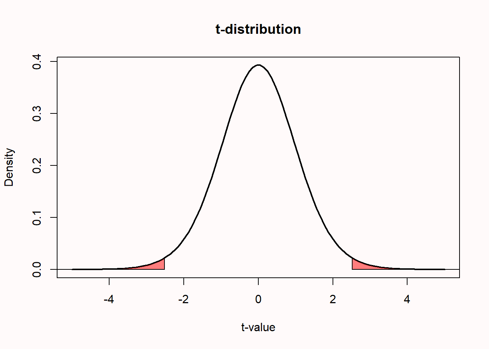
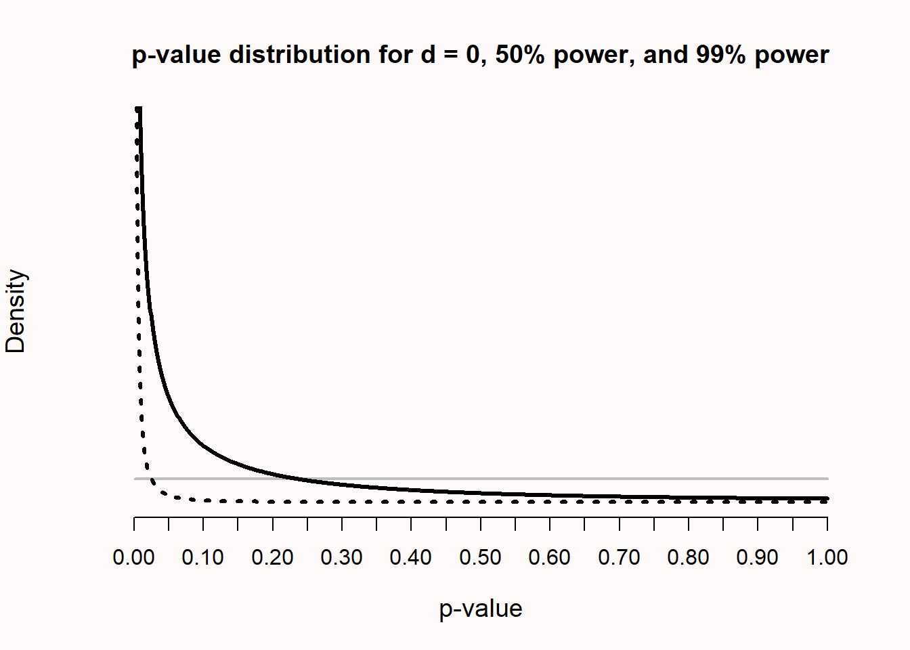
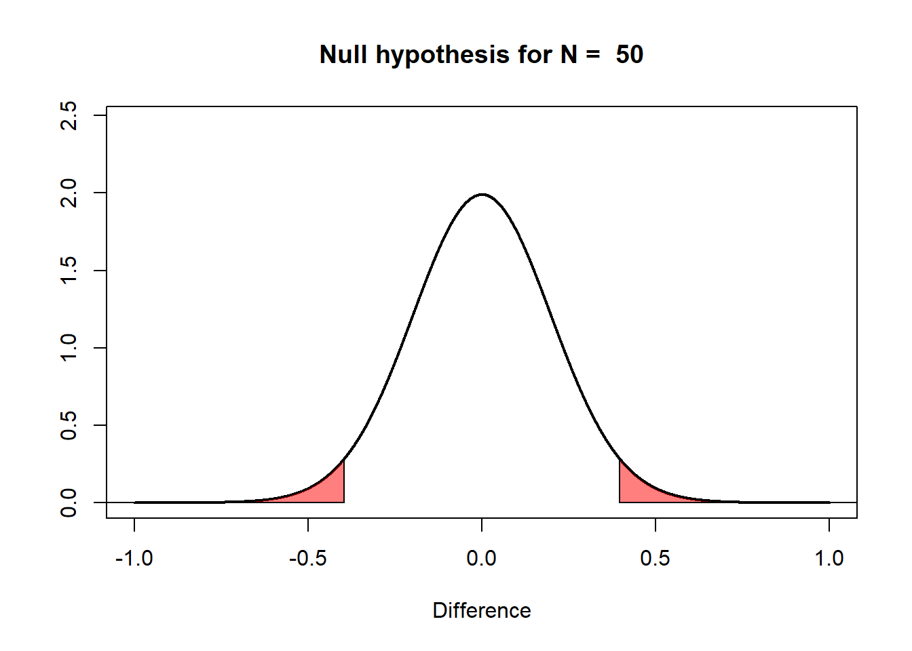
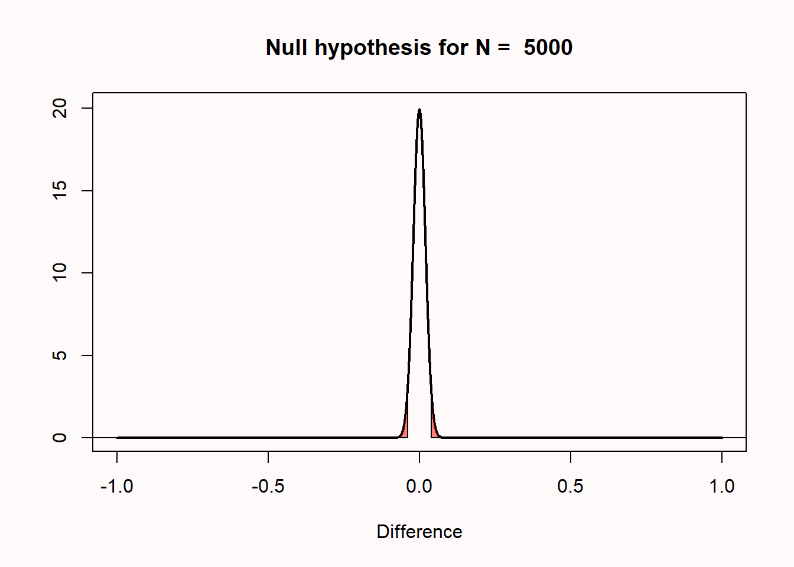
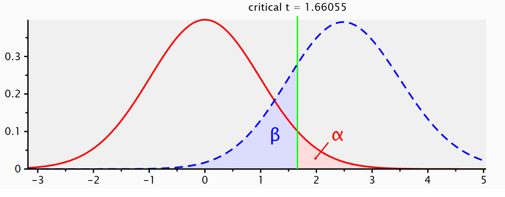
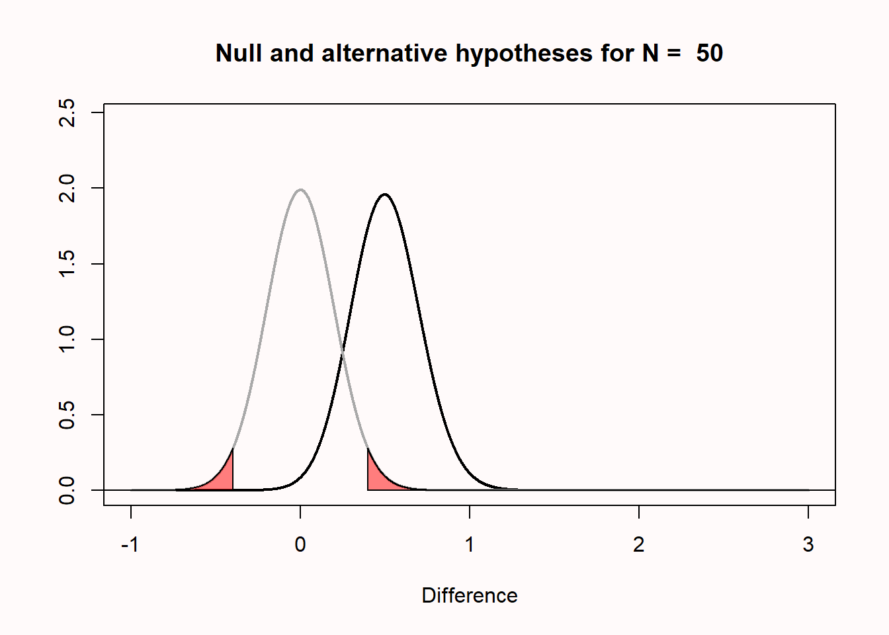
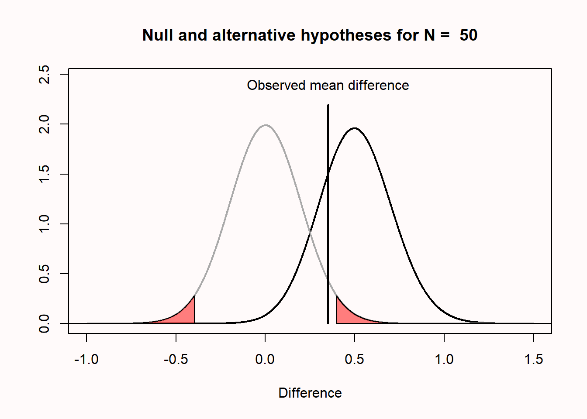
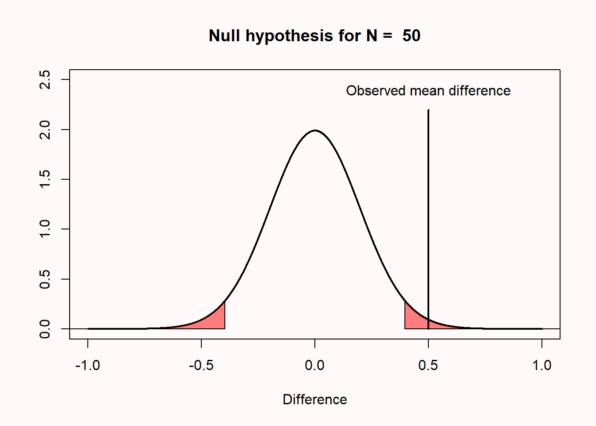
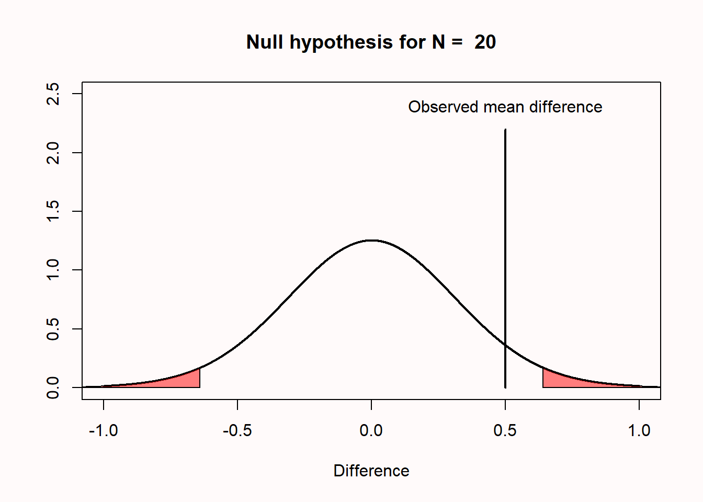

1 Usar valores p para poner a prueba una hipótesis
Traducción literal al castellano del capítulo 1, “Using p-values to test a hypothesis”, de Daniel Lakens, Improving Your Statistical Inferences.
Original: https://lakens.github.io/statistical_inferences/01-pvalue.html
Licencia del original: CC-BY-4.0. Traducción no oficial.
Los científicos pueden intentar responder a una amplia variedad de preguntas recogiendo datos. Una pregunta que interesa a los científicos es si las mediciones que se han recogido bajo condiciones diferentes difieren, o no. La respuesta a tal pregunta es una afirmación ordinal, donde un investigador afirma que la media de las mediciones es mayor, o menor, o la misma, al comparar condiciones. Por ejemplo, un investigador podría estar interesado en la hipótesis de que los estudiantes aprenden mejor si hacen pruebas, durante las cuales necesitan recuperar información que han aprendido —condición A—, en comparación con no hacer pruebas, sino dedicar todo su tiempo a estudiar —condición B—. Después de recoger datos, y observar que la calificación media es mayor para los estudiantes que dedicaron parte de su tiempo a hacer pruebas, el investigador puede hacer la afirmación ordinal de que el rendimiento de los estudiantes fue mejor en la condición A en comparación con la condición B. Las afirmaciones ordinales solo pueden usarse para afirmar que hay una diferencia entre condiciones. No cuantifican el tamaño del efecto.
Para hacer afirmaciones ordinales, los investigadores suelen apoyarse en un procedimiento metodológico conocido como prueba de hipótesis. Una parte de una prueba de hipótesis consiste en calcular un valor p y examinar si hay una diferencia estadísticamente significativa. “Significativo” significa que algo merece atención. Una prueba de hipótesis se usa para distinguir una señal —que merece que se le preste atención— del ruido aleatorio en los datos empíricos. Merece la pena distinguir la significación estadística, que solo se usa para afirmar si un efecto observado es una señal o ruido, de la significación práctica, que depende de si el tamaño del efecto es lo bastante grande como para tener consecuencias valiosas en la vida real. Los investigadores usan un procedimiento metodológico para decidir si hacer o no una afirmación ordinal como salvaguarda contra el sesgo de confirmación. En un informe interno para la cervecera Guinness sobre el uso de pruebas estadísticas en un contexto aplicado, William Gosset —o “Student”, quien desarrolló la prueba t— ya escribió:
Por otra parte, se acepta generalmente que dejar el rechazo de experimentos enteramente a discreción del experimentador es peligroso, ya que es probable que esté sesgado. Por ello se ha propuesto adoptar un criterio que dependa de la probabilidad de que un error tan amplio ocurra en el número dado de observaciones.
Dependiendo de sus deseos, los científicos podrían verse tentados a interpretar los datos como apoyo para su hipótesis, incluso cuando no lo son. Como señala Benjamini, un valor p “ofrece una primera línea de defensa contra ser engañado por la aleatoriedad, separando la señal del ruido”. Hay indicios de que prohibir el uso de valores p incrementa la capacidad de los investigadores para presentar afirmaciones erróneas. Basándose en análisis cualitativos de artículos científicos publicados después de la prohibición de la significación de la hipótesis nula en la revista Basic and Applied Social Psychology, Fricker et al. concluyen: “Cuando los investigadores solo emplean estadística descriptiva, encontramos que es probable que sobreinterpreten y/o exageren sus resultados en comparación con un investigador que usa pruebas de hipótesis con el umbral p < 0.05”. Una prueba de hipótesis, cuando se usa correctamente, controla la cantidad de veces que los investigadores se engañarán a sí mismos cuando hagan afirmaciones ordinales.
1.1 Enfoques filosóficos sobre los valores p
Antes de mirar cómo se calculan los valores p, es importante examinar cómo se supone que nos ayudan a hacer afirmaciones ordinales cuando ponemos a prueba hipótesis. La definición de un valor p es la probabilidad de observar los datos muestrales, o datos más extremos, asumiendo que la hipótesis nula es verdadera. Pero esta definición no nos dice mucho sobre cómo deberíamos interpretar un valor p.
La interpretación de un valor p depende de la filosofía estadística a la que uno se adhiera. Ronald Fisher publicó Statistical Methods for Research Workers en 1925, obra que popularizó el uso de los valores p. En un marco fisheriano, un valor p se interpreta como una medida continua descriptiva de compatibilidad entre los datos observados y la hipótesis nula —o el modelo nulo—. La hipótesis nula es un modelo de los datos que se esperan si no hay efecto. Por ejemplo, si asumimos que las puntuaciones de dos grupos de estudiantes son las mismas, y que una intervención en uno de los dos grupos no tiene efecto sobre las puntuaciones, el modelo nulo es que la diferencia entre las puntuaciones se distribuye alrededor de cero con una determinada desviación estándar. En una prueba estadística, un investigador examinaría si esta hipótesis nula puede ser rechazada basándose en los datos observados, o no.
Según Fisher, los valores p “no conducen generalmente a ninguna declaración de probabilidad sobre el mundo real, sino a ‘una medida racional y bien definida de la reticencia a aceptar las hipótesis que ponen a prueba’” (p. 44). Cuanto menor es el valor p, mayor es la reticencia a aceptar la hipótesis nula. Spanos se refiere al enfoque fisheriano como prueba de mala especificación (misspecification testing), tal como se usa al probar supuestos del modelo. En una prueba de mala especificación —como las medidas de bondad de ajuste—, la hipótesis nula se prueba contra cualquier hipótesis alternativa no especificada. Sin una hipótesis alternativa especificada, el valor p solo puede usarse para describir la probabilidad de los datos observados o más extremos bajo el modelo nulo.
Fisher intentó formalizar su filosofía en un enfoque llamado “inferencia fiducial”, pero este no ha recibido la misma adopción generalizada que otros enfoques, como la teoría de la decisión, las verosimilitudes y la inferencia bayesiana. De hecho, Zabell escribe: “El argumento fiducial permanece como el gran fracaso de Fisher”, aunque otros han expresado la esperanza de que pueda desarrollarse en el futuro como un enfoque útil. Un valor p fisheriano describe la incompatibilidad de los datos con una única hipótesis, y se conoce como prueba de significación. La razón principal por la que una prueba de significación es limitada es que los investigadores solo especifican una hipótesis nula (\(H_0\)), pero no la hipótesis alternativa (\(H_1\)). Según Spanos, después de que se hayan comprobado los supuestos del modelo, cuando se “prueban restricciones teóricas dentro de un modelo estadísticamente adecuado, sin embargo, el enfoque de Neyman-Pearson se convierte en el procedimiento de elección” (p. xxiii).
Neyman y Pearson se basaron en las ideas sobre valores p de Gosset y Fisher, y desarrollaron un enfoque llamado contraste estadístico de hipótesis. La principal diferencia con el enfoque de prueba de significación desarrollado por Fisher es que en un contraste estadístico de hipótesis se especifican tanto una hipótesis nula como una hipótesis alternativa. En un marco de Neyman-Pearson, el objetivo de las pruebas estadísticas es guiar el comportamiento de los investigadores con respecto a estas dos hipótesis. Basándose en los resultados de una prueba estadística, y sin saber nunca si la hipótesis es verdadera o no, los investigadores eligen actuar tentativamente como si la hipótesis nula o la hipótesis alternativa fuera verdadera. En psicología, los investigadores suelen usar un híbrido imperfecto de los marcos fisheriano y de Neyman-Pearson, pero el enfoque de Neyman-Pearson es, según Dienes, “la lógica subyacente a toda la estadística que ves en las revistas profesionales de psicología”.
Cuando se realiza una prueba de hipótesis de Neyman-Pearson, el valor p observado solo se usa para comprobar si es menor que el nivel alfa elegido, pero no importa cuánto menor sea. Por ejemplo, si se usa un nivel alfa de 0.01, tanto un p = 0.006 como un p = 0.000001 llevarán a los investigadores a decidir actuar como si el estado del mundo estuviera mejor descrito por la hipótesis alternativa. Esto difiere de un enfoque fisheriano de los valores p, donde cuanto menor es el valor p, mayor es la reticencia psicológica de un investigador a aceptar la hipótesis nula que está probando. Una prueba de hipótesis de Neyman-Pearson no ve el objetivo de una inferencia como cuantificar una medida continua de compatibilidad o evidencia. En cambio, como escribe Neyman:
El contenido del concepto de comportamiento inductivo es el reconocimiento de que el propósito de toda investigación seria es proporcionar fundamentos para la selección de uno entre varios cursos de acción contemplados.
Intuitivamente, uno podría sentir que las decisiones sobre cómo actuar no deberían basarse en los resultados de una única prueba estadística, y este punto se plantea a menudo como crítica al enfoque de Neyman-Pearson de las inferencias estadísticas. Sin embargo, tales críticas raramente usan la misma definición de “acto” que usó Neyman. Es cierto que, por ejemplo, la decisión de implementar una nueva política gubernamental no debería basarse en el resultado de un único estudio. Sin embargo, Neyman también consideraba que hacer una afirmación científica era un “acto”, y escribió (1957, p. 10) que la fase conclusiva de un estudio implica: “un acto de voluntad o una decisión de emprender una acción particular, quizá asumir una actitud particular hacia los diversos conjuntos de hipótesis”.
Cox escribe:
[S]e podría argumentar que al hacer una inferencia estamos “decidiendo” hacer una afirmación de cierto tipo sobre las poblaciones y que, por tanto, siempre que la palabra decisión no se interprete de forma demasiado estrecha, el estudio de las decisiones estadísticas abarca el de la inferencia. El punto aquí es que uno de los principales problemas generales de la inferencia estadística consiste en decidir qué tipos de afirmación pueden hacerse útilmente y exactamente qué significan.
Así, en un enfoque de Neyman-Pearson, los valores p forman la base de las decisiones sobre qué afirmaciones hacer. En ciencia, tales afirmaciones subyacen a la mayoría de los experimentos novedosos en forma de hipótesis auxiliares, o los supuestos sobre hipótesis subyacentes que se asumen como precisos para que una prueba funcione como se planificó. Por ejemplo, si es importante que los participantes puedan ver el color en un experimento planificado, asumimos que es verdadero que la prueba de Ishihara identifica con éxito qué participantes son daltónicos.
1.2 Crear un modelo nulo
Supongamos que pregunto a dos grupos de 10 personas cuánto les gustó la versión extendida del director de la trilogía de El Señor de los Anillos —LOTR— (véase la Tabla 1.1). Esto significa que nuestro tamaño muestral total (N) es 20, y que el tamaño muestral de cada grupo (n) es 10. El primer grupo está formado por mis amigos, y el segundo grupo está formado por los amigos de mi esposa. Nuestros amigos valoran la trilogía en una puntuación de 1 a 10. Podemos calcular la valoración media de mis amigos, que es 8.7, y la valoración media de los amigos de mi esposa, que es 7.7. Podemos comparar las puntuaciones de ambos grupos mirando los datos brutos y representando los datos.
Tabla 1.1. Valoraciones de la trilogía extendida de El Señor de los Anillos por dos grupos de amigos.
| Amigos de Daniel | Amigos de Kyra | |
|---|---|---|
| friend_1 | 9 | 9 |
| friend_2 | 7 | 6 |
| friend_3 | 8 | 7 |
| friend_4 | 9 | 8 |
| friend_5 | 8 | 7 |
| friend_6 | 9 | 9 |
| friend_7 | 9 | 8 |
| friend_8 | 10 | 8 |
| friend_9 | 9 | 8 |
| friend_10 | 9 | 7 |
Vemos que los grupos se solapan, pero las valoraciones medias difieren en 1 punto entero. La pregunta a la que nos enfrentamos ahora es la siguiente: ¿la diferencia entre los dos grupos es solo variación aleatoria, o podemos afirmar que a mis amigos les gusta más la versión extendida del director de la trilogía LOTR que a los amigos de mi esposa?
En una prueba de significación de la hipótesis nula intentamos responder a esta pregunta calculando la probabilidad de la diferencia observada —en este caso, una diferencia media de 1— o una diferencia más extrema, bajo el supuesto de que no hay una diferencia real entre cuánto les gusta a mis amigos y a los amigos de mi esposa la versión extendida del director de LOTR, y de que solo estamos observando ruido aleatorio. Esta probabilidad se llama valor p. Si esta probabilidad es lo bastante baja, decidimos afirmar que hay una diferencia. Si esta probabilidad no es lo bastante baja, nos abstenemos de hacer una afirmación sobre una diferencia.
La hipótesis nula asume que si preguntáramos a un número infinito de mis amigos y a un número infinito de amigos de mi esposa cuánto les gusta LOTR, la diferencia entre estos enormes grupos sería exactamente 0. Sin embargo, en cualquier muestra extraída de la población, es muy probable que la variación aleatoria lleve a una diferencia algo mayor o menor que 0. Podemos crear un modelo nulo que cuantifique la variación esperada en los datos observados, debida solo al ruido aleatorio, para decirnos qué constituye una expectativa razonable sobre cuánto pueden variar las diferencias entre grupos si no hay diferencia en la población.
Es práctico crear un modelo nulo en términos de una distribución estandarizada, ya que esto facilita calcular la probabilidad de que ocurran valores específicos, independientemente de la escala que se use para recoger las mediciones. Una versión de un modelo nulo para diferencias es la distribución t, que puede usarse para describir qué diferencias deberían esperarse al extraer muestras de una población. Tal modelo nulo se construye sobre supuestos. En el caso de la distribución t, el supuesto es que las puntuaciones se distribuyen normalmente. En realidad, los supuestos sobre los que se construyen los métodos estadísticos nunca se cumplen perfectamente, razón por la cual los estadísticos examinan el impacto de las violaciones de supuestos sobre los procedimientos metodológicos —por ejemplo, el procedimiento para rechazar una hipótesis basándose en un determinado valor de prueba—. Las pruebas estadísticas siguen siendo útiles en la práctica cuando el impacto de las violaciones sobre las inferencias estadísticas es lo bastante pequeño.
Podemos cuantificar la distribución de valores t que se espera cuando no hay diferencia en la población mediante una función de densidad de probabilidad. Abajo hay una gráfica de la función de densidad de probabilidad para una distribución t con 18 grados de libertad (df), lo que corresponde a nuestro ejemplo, donde recogemos datos de 20 amigos (df = N - 2 para dos grupos independientes). Para una distribución continua, donde las probabilidades se definen para un número infinito de puntos, la probabilidad de observar cualquier punto individual —por ejemplo, t = 2.5— es siempre cero. Las probabilidades se miden sobre intervalos. Por esta razón, cuando se calcula un valor p, no se define como “la probabilidad de observar los datos”, sino como “la probabilidad de observar los datos, o datos más extremos”. Esto crea un intervalo —una cola de una distribución— para el cual puede calcularse una probabilidad.
1.3 Calcular un valor p
Un valor t para una prueba t de dos muestras puede calcularse a partir de las medias de las dos muestras, las desviaciones estándar de las dos muestras y los tamaños muestrales de cada grupo. Calculando después la probabilidad de observar un valor t tan extremo o más extremo que el observado, obtenemos un valor p. Para la comparación de las valoraciones de la película en los dos grupos de amigos anteriores, realizar una prueba t de Student bilateral produce un valor t de 2.5175 y un valor p de 0.02151.
t.test(df_long$rating ~ df_long$`Friend Group`, var.equal = TRUE)Two Sample t-test
data: df_long$rating by df_long$`Friend Group`
t = 2.5175, df = 18, p-value = 0.02151
alternative hypothesis: true difference in means between group Friends of Daniel and group Friends of Kyra is not equal to 0
95 percent confidence interval:
0.1654875 1.8345125
sample estimates:
mean in group Friends of Daniel mean in group Friends of Kyra
8.7 7.7Podemos representar la distribución t —para df = 18— y resaltar las dos áreas de cola que empiezan en los valores t de 2.5175 y -2.5175.

1.4 ¿Qué valores p puedes esperar?
En un vídeo muy educativo sobre la “danza de los valores p” (Dance of the p-values), Geoff Cumming explica que los valores p varían de experimento a experimento. Sin embargo, esto no es una razón para “no confiar en p”, como menciona en el vídeo. En cambio, es importante comprender claramente las distribuciones de valores p para prevenir malentendidos. Puesto que los valores p forman parte de la estadística frecuentista, necesitamos examinar qué podemos esperar a largo plazo. Como nunca hacemos el mismo experimento cientos de veces, y solo hacemos un número muy limitado de estudios a lo largo de nuestra vida, la mejor manera de aprender qué deberíamos esperar a largo plazo es mediante simulaciones por ordenador.
Tómate un momento para intentar responder a las siguientes dos preguntas. ¿Qué valores p puedes esperar observar si hay un efecto verdadero y repites el mismo estudio 100000 veces? ¿Y qué valores p puedes esperar si no hay efecto verdadero y repites el mismo estudio cien mil veces? Si no sabes la respuesta, no te preocupes: ahora la aprenderás. Pero si no sabes la respuesta, merece la pena reflexionar sobre por qué no sabes la respuesta a un aspecto tan esencial de los valores p. Si eres como yo, sencillamente nunca te enseñaron esto. Pero, como veremos, es esencial para una comprensión sólida de cómo interpretar los valores p.
Qué valores p puedes esperar está completamente determinado por la potencia estadística del estudio o, en otras palabras, por la probabilidad de que observes un efecto significativo si hay un efecto verdadero. La potencia estadística va de 0 a 1. Podemos ilustrarlo simulando pruebas t independientes. La idea es que simulamos tiempos de reacción para dos grupos de personas. Sabemos que la desviación estándar de los tiempos de reacción en esta tarea es de 75 ms. Estableceremos el tiempo medio de reacción en un grupo simulado en 100 ms, y en el otro grupo simulado en 130 ms. Estamos probando si las personas de un grupo tienen un tiempo de reacción diferente al de las personas del otro grupo —y sabemos que la respuesta correcta es “sí”, porque lo hemos hecho así en la simulación—.
La visualización interactiva de abajo ejecuta esta simulación. En cada experimento simulado, n = 49 tiempos de reacción se extraen de una distribución normal para cada grupo —por defecto: M = 100 ms y M = 130 ms, SD = 75 ms—, se realiza una prueba t independiente y se almacena el valor p. Una vez completadas todas las simulaciones, la distribución de valores p se representa como un histograma. Usa las entradas para cambiar las medias de los grupos, la desviación estándar, el tamaño muestral, el número de simulaciones y el nivel alfa, y después haz clic en Run simulation.
Una simulación interactiva de la distribución de valores p está disponible en la versión en línea de este libro.
En el eje x vemos valores p de 0 a 1 en 20 barras, y en el eje y vemos con qué frecuencia se observaron estos valores p. La línea horizontal roja punteada muestra la frecuencia esperada por barra si \(H_0\) fuera verdadera: con 100000 simulaciones y 20 barras, eso son 5000 por barra. En el título de la simulación se da la potencia estadística alcanzada en los estudios simulados —asumiendo α = 0.05—. Con la configuración por defecto (n = 49, M = 100 ms frente a M = 130 ms, SD = 75 ms), los estudios tienen aproximadamente un 50% de potencia.
El resultado de la simulación ilustra la función de densidad de probabilidad de los valores p para una prueba t. Una función de densidad de probabilidad proporciona la probabilidad de que una variable aleatoria tenga un valor específico —como la Figura 1.1 de la distribución t—. Como el valor p es una variable aleatoria, podemos usar su función de densidad de probabilidad para representar la distribución de valores p, como en la figura interactiva de abajo. La distribución de valores p es una función de la potencia estadística de la prueba —que es mayor si se incrementan el tamaño muestral, el tamaño del efecto o el nivel alfa de la prueba—. Puedes explorar esto aumentando o disminuyendo la potencia moviendo el control deslizante en la visualización interactiva de abajo.
Una aplicación interactiva de distribución de valores p está disponible en la versión en línea de este libro.
Cuando no hay un efecto verdadero y se cumplen los supuestos de la prueba, los valores p para una prueba t están uniformemente distribuidos. Esto significa que cada valor p es igualmente probable de observar cuando la hipótesis nula es verdadera. En otras palabras, cuando no hay un efecto verdadero, un valor p de 0.08 es tan probable como un valor p de 0.98. Recuerdo haber pensado que esto era muy contraintuitivo cuando aprendí por primera vez sobre las distribuciones uniformes de valores p —después de terminar mi doctorado—. Pero tiene sentido que los valores p estén uniformemente distribuidos cuando recordamos que, cuando \(H_0\) es verdadera, un alpha % de los valores p debería caer por debajo del nivel alfa, sea cual sea el nivel alfa que fijemos. Por tanto, si fijamos alfa en 0.01, el 1% de los valores p observados debería caer por debajo de 0.01, y si fijamos alfa en 0.12, el 12% de los valores p observados debería caer por debajo de 0.12. Esto solo puede ocurrir si los valores p están uniformemente distribuidos cuando la hipótesis nula es verdadera. Nótese que la distribución uniforme de valores p solo aparece si la distribución del estadístico de prueba es continua —por ejemplo, como en la prueba t—, y no si la distribución del estadístico de prueba es discreta —por ejemplo, en el caso de la prueba chi-cuadrado, véase Wang et al.—. Puedes examinar este comportamiento fijando las medias de ambos grupos en el mismo valor, o la potencia en el 5%, en las simulaciones interactivas anteriores.
1.5 La paradoja de Lindley
A medida que aumenta la potencia estadística, algunos valores p por debajo de 0.05 —por ejemplo, p = 0.04— pueden ser más probables cuando no hay efecto que cuando hay un efecto. Esto se conoce como la paradoja de Lindley, o a veces como la paradoja de Jeffreys-Lindley. Como la distribución de valores p es una función de la potencia estadística, cuanto mayor es la potencia, más asimétrica hacia la derecha se vuelve la distribución de valores p —es decir, más probable se vuelve observar valores p pequeños—. Cuando no hay un efecto verdadero, los valores p están uniformemente distribuidos, y el 1% de los valores p observados cae entre 0.04 y 0.05. Cuando hay un efecto verdadero y la potencia estadística es extremadamente alta, no solo la mayoría de los valores p caerán por debajo de 0.05; de hecho, la mayoría de los valores p caerán muy por debajo de 0.01. En la Figura 1.2 vemos que, con un efecto verdadero y alta potencia, valores p muy pequeños —por ejemplo, 0.001— son más probables de observar cuando hay un efecto que cuando no hay efecto —por ejemplo, la curva negra punteada que representa una potencia del 99% cae por encima de la línea horizontal gris que representa la distribución uniforme cuando la nula es verdadera para un valor p de 0.01—.
Sin embargo, quizá sorprendentemente, observar un valor p de 0.04 es más probable cuando la hipótesis nula (\(H_0\)) es verdadera que cuando la hipótesis alternativa (\(H_1\)) es verdadera y tenemos una potencia muy alta, como ilustra el hecho de que en la Figura 1.2 la densidad de la distribución de valores p en p = 0.04 es mayor si la hipótesis nula es verdadera que cuando la hipótesis alternativa es verdadera y una prueba tiene un 99% de potencia. La paradoja de Lindley muestra que un valor p, por ejemplo 0.04, puede ser estadísticamente significativo, pero al mismo tiempo proporcionar evidencia para la hipótesis nula. Desde un enfoque de Neyman-Pearson hemos hecho una afirmación que tiene una tasa máxima de error del 5%, pero desde un enfoque de verosimilitud o bayesiano deberíamos concluir que nuestros datos proporcionan evidencia a favor de la hipótesis nula, en relación con la hipótesis alternativa. La paradoja de Lindley ilustra cuándo diferentes filosofías estadísticas llegarían a conclusiones diferentes, y por qué un valor p no puede interpretarse directamente como una medida de evidencia sin tener en cuenta la potencia de la prueba. Aunque una aplicación estricta del enfoque de Neyman-Pearson no lo requiere, los investigadores podrían desear prevenir situaciones en las que un frecuentista rechaza la hipótesis nula basándose en p < 0.05, cuando la evidencia en la prueba favorece la hipótesis nula sobre la hipótesis alternativa. Esto puede lograrse reduciendo el nivel alfa como función del tamaño muestral, como se explica en el capítulo sobre control de errores.

1.6 Informar e interpretar correctamente los valores p
Aunque desde una perspectiva estricta de Neyman-Pearson es suficiente informar que p < \(\alpha\) o que p > \(\alpha\), los investigadores deberían informar siempre los valores p exactos. Esto facilita la reutilización de los resultados para análisis secundarios, y permite a otros investigadores comparar el valor p con un nivel alfa que ellos habrían preferido usar. Como las afirmaciones se hacen usando un procedimiento metodológico con tasas máximas de error conocidas, un valor p nunca permite afirmar nada con certeza. Incluso si fijamos el nivel alfa en 0.000001, cualquier afirmación individual puede ser un error; Fisher nos recuerda que “la ‘una posibilidad en un millón’ ocurrirá sin duda, ni menos ni más que con su frecuencia apropiada, por muy sorprendidos que estemos de que nos ocurra a nosotros”. Esta es la razón por la que los estudios de replicación son importantes en ciencia. Cualquier hallazgo individual podría ser una casualidad, pero esta probabilidad disminuye rápidamente si varios estudios de replicación observan el mismo hallazgo. Esta incertidumbre a veces no se refleja en la escritura académica, donde puede verse a los investigadores usando palabras como “probar”, “mostrar” o “se sabe”. Una afirmación ligeramente más larga pero más precisa después de una prueba de hipótesis nula estadísticamente significativa sería:
Afirmamos que hay un efecto distinto de cero, reconociendo al mismo tiempo que, si los científicos hacen afirmaciones usando este procedimiento metodológico, serán inducidos a error, a largo plazo, como máximo un alpha % de las veces, lo cual consideramos aceptable. En el futuro previsible, y hasta que emerjan nuevos datos o información que demuestren que estamos equivocados, asumiremos que esta afirmación es correcta.
Después de una prueba de hipótesis nula estadísticamente no significativa, se podría escribir:
No podemos afirmar que haya un efecto distinto de cero, reconociendo al mismo tiempo que, si los científicos se abstienen de hacer afirmaciones usando este procedimiento metodológico, serán inducidos a error, a largo plazo, como máximo un beta % de las veces, lo cual consideramos aceptable.
Nótese que después de una prueba de hipótesis nula no significativa no podemos afirmar la ausencia de un efecto, razón por la cual es aconsejable realizar siempre también una prueba de equivalencia. Si has realizado una prueba de efecto mínimo, sustituye “distinto de cero” en las frases anteriores por el efecto mínimo contra el que estás probando.
Recuerda que en un marco de Neyman-Pearson los investigadores hacen afirmaciones, pero no necesariamente creen en la verdad de esas afirmaciones. Por ejemplo, la colaboración OPERA informó en 2011 que había observado datos que parecían sugerir que los neutrinos viajaban más rápido que la velocidad de la luz. Esta afirmación se hizo con una tasa de error Tipo 1 de 0.2 por millón, asumiendo que el error se debía puramente al ruido aleatorio. Sin embargo, ninguno de los investigadores creía realmente que esta afirmación fuera verdadera, porque es teóricamente imposible que los neutrinos se muevan más rápido que la velocidad de la luz. De hecho, más tarde se confirmó que las causas de los datos anómalos fueron fallos del equipo: un cable de fibra óptica se había conectado incorrectamente y un oscilador de reloj marcaba demasiado rápido. No obstante, la afirmación se hizo con una invitación explícita a la comunidad científica para que proporcionara nuevos datos o información que demostraran que esta afirmación era errónea.
Cuando los investigadores “aceptan” o “rechazan” una hipótesis en un enfoque de Neyman-Pearson de las inferencias estadísticas, no comunican ninguna creencia o conclusión sobre la hipótesis sustantiva. En cambio, emiten un enunciado básico popperiano basado en una regla de decisión preespecificada según la cual los datos observados reflejan cierto estado del mundo. Los enunciados básicos describen una observación que se ha hecho —por ejemplo, “he observado un cisne negro”— o un acontecimiento que ha ocurrido —por ejemplo, “los estudiantes rindieron mejor en el examen cuando distribuyeron su repaso en varios días que cuando repasaron todo en un solo día”—.
La afirmación versa sobre los datos que hemos observado, pero no sobre la teoría que usamos para hacer nuestras predicciones, lo cual requiere una inferencia teórica. Los datos nunca “prueban” que una teoría sea verdadera o falsa. Un enunciado básico puede corroborar una predicción derivada de una teoría, o no. Si muchas predicciones deducidas de una teoría son corroboradas, podemos convencernos cada vez más de que la teoría está cerca de la verdad. Esta “semejanza con la verdad” de las teorías se llama verosimilitud. Por tanto, una afirmación más breve cuando se presenta una prueba de hipótesis sería: “p = .xx, lo que corrobora nuestra predicción, a un nivel alfa de y%”, o “p = .xx, lo que no corrobora nuestra predicción, con una potencia estadística de y% para nuestro tamaño del efecto de interés”. A menudo, el nivel alfa o la potencia estadística solo se mencionan en la sección de diseño experimental de un artículo, pero repetirlos en la sección de resultados podría recordar a los lectores las tasas de error asociadas con tus afirmaciones.
Incluso cuando hemos hecho afirmaciones correctas, la teoría subyacente puede ser falsa. Popper nos recuerda que “la base empírica de la ciencia objetiva no tiene, por tanto, nada ‘absoluto’”. Sostiene que la ciencia no está construida sobre un lecho de roca firme, sino sobre pilotes hincados en un pantano, y señala que “simplemente nos detenemos cuando estamos satisfechos de que los pilotes son lo bastante firmes como para sostener la estructura, al menos por el momento”. Como escribe Hacking: “El rechazo no es refutación. Muchos rechazos deben ser solo tentativos”. Así que cuando rechazamos el modelo nulo, lo hacemos tentativamente, conscientes de que podríamos haberlo hecho por error, sin creer necesariamente que el modelo nulo sea falso, y sin creer que la teoría que hemos usado para hacer predicciones sea verdadera. Para Neyman, el comportamiento inferencial es un “acto de voluntad de comportarse en el futuro —quizá hasta que se realicen nuevos experimentos— de una manera particular, conforme al resultado del experimento”. Todo conocimiento en ciencia es provisional.
Algunos estadísticos recomiendan interpretar los valores p como medidas de evidencia. Por ejemplo, Bland enseña que los valores p pueden interpretarse como una guía “aproximada y práctica” de la fuerza de la evidencia, y que p > 0.1 indica “poca o ninguna evidencia”, .05 < p < 0.1 indica “evidencia débil”, 0.01 < p < 0.05 indica “evidencia”, y p < 0.001 es “evidencia muy fuerte”. Esto es incorrecto, como queda claro a partir de las discusiones anteriores sobre la paradoja de Lindley y las distribuciones uniformes de valores p. Los investigadores que afirman que los valores p son medidas de evidencia típicamente no definen el concepto de evidencia. En este libro sigo la teoría matemática de la evidencia desarrollada por Shafer, quien escribe: “Un resumen adecuado del impacto de la evidencia sobre una proposición particular \(A\) debe incluir al menos dos elementos de información: un informe sobre cuán bien está apoyada \(A\) y un informe sobre cuán bien está apoyada su negación \(\overline{A}\)”. Según Shafer, la evidencia se cuantifica mediante funciones de apoyo y, al evaluar evidencia estadística, el apoyo se cuantifica mediante la función de verosimilitud. Si quieres cuantificar evidencia, véanse los capítulos sobre verosimilitudes o estadística bayesiana.
1.7 Prevenir malentendidos comunes sobre los valores p
Un valor p es la probabilidad de los datos observados, o de datos más extremos, bajo el supuesto de que la hipótesis nula es verdadera. Para comprender qué significa esto, puede ser especialmente útil saber qué no significa. Primero, necesitamos saber cómo se ve “el supuesto de que la hipótesis nula es verdadera”, y qué datos deberíamos esperar si la hipótesis nula es verdadera. Aunque la hipótesis nula puede ser cualquier valor, en esta tarea asumiremos que la hipótesis nula se especifica como una diferencia media de 0. Por ejemplo, podríamos estar interesados en calcular la diferencia entre una condición de control y una condición experimental en una variable dependiente.
Es útil distinguir la hipótesis nula —la predicción de que la diferencia media en la población es exactamente 0— y el modelo nulo —un modelo de los datos que deberíamos esperar cuando recogemos datos si la hipótesis nula es verdadera—. La hipótesis nula es un punto en 0, pero el modelo nulo es una distribución. Se visualiza en libros de texto o software de análisis de potencia usando imágenes como las que puedes ver en la Figura 1.1, con valores t en el eje horizontal y un valor t crítico en algún lugar entre 1.96 y 2.15 —dependiendo del tamaño muestral—. Esto se hace porque la prueba estadística al comparar dos grupos se basa en la distribución t, y el valor p es estadísticamente significativo cuando el valor t es mayor que un valor t crítico.
Personalmente encuentro que las cosas se vuelven mucho más claras si representas el modelo nulo como diferencias medias en lugar de valores t, como en la Figura 1.3. Esta gráfica muestra un modelo nulo para las diferencias medias que podemos esperar al comparar dos grupos de 50 observaciones donde la diferencia verdadera entre los dos grupos es 0, y la desviación estándar en cada grupo es 1. Como la desviación estándar es 1, también puedes interpretar las diferencias medias como un tamaño del efecto d de Cohen. Así que esta es también la distribución que puedes esperar para una d de Cohen de 0 al recoger 50 observaciones por grupo en una prueba t independiente.

Lo primero que hay que notar es que esperamos que la media del modelo nulo sea 0. Mirando el eje x, vemos que la distribución representada está centrada en 0. Pero incluso si la diferencia media en la población es 0, eso no implica que cada par de muestras que extraigamos de la población produzca una diferencia media exactamente igual a cero. Hay variación alrededor del valor poblacional, como función de la desviación estándar y el tamaño muestral.
El eje y del gráfico representa la densidad, que proporciona una indicación de la probabilidad relativa de medir un valor particular de una distribución continua. Podemos ver que la diferencia media más probable es el verdadero valor poblacional de cero, y que las diferencias con una magnitud mayor que cero se vuelven cada vez menos probables. El gráfico tiene dos áreas coloreadas de rojo. Estas áreas representan el 2.5% más extremo de valores en la cola izquierda de la distribución, y el 2.5% más extremo de valores en la cola derecha de la distribución. Juntas constituyen el 5% de diferencias medias más extremas que esperaríamos observar, dado nuestro número de observaciones, cuando la verdadera diferencia media es exactamente 0. Cuando se observa una diferencia media en el área roja, la prueba estadística correspondiente devolverá un resultado estadísticamente significativo a un nivel alfa del 5%, y el valor p será < 0.05. En otras palabras, no más del 5% de las diferencias medias observadas estarán lo bastante lejos de 0 como para ser consideradas “sorprendentes” o estadísticamente significativas. Como la hipótesis nula es verdadera, observar una diferencia media “sorprendente” en cualquiera de las dos áreas rojas es un error Tipo 1.
Supongamos que el modelo nulo de la Figura 1.3 anterior es verdadero, y que observamos una diferencia media de 0.5 entre los dos grupos. Esta diferencia observada cae en el área roja de la cola derecha de la distribución. Esto significa que la diferencia media observada es relativamente sorprendente bajo el supuesto de que la verdadera diferencia media es 0. Si la verdadera diferencia media es 0, las funciones de densidad de probabilidad muestran que no deberíamos esperar una diferencia media de 0.5 muy a menudo. Si calculamos un valor p para esta observación, sería menor que el 5%. La probabilidad de observar una diferencia media que esté al menos tan lejos de 0 como 0.5 —ya sea a la izquierda de la media o a la derecha, cuando hacemos una prueba bilateral— es menor que el 5%.
Una razón por la que prefiero representar el modelo nulo en puntuaciones brutas en lugar de valores t es que puedes ver cómo cambia el modelo nulo cuando aumenta el tamaño muestral. Cuando recogemos 5000 observaciones en lugar de 50, vemos que el modelo nulo sigue centrado en 0, pero en nuestro modelo nulo ahora esperamos que la mayoría de los valores caigan muy cerca de 0 —véase la Figura 1.4—.

La distribución es mucho más estrecha porque la distribución de diferencias medias se basa en el error estándar de la diferencia entre medias. El error estándar se calcula basándose en la desviación estándar y el tamaño muestral, como sigue:
\[SE = \sqrt{\frac{\sigma_{1}^{2}}{n_{1}}+\frac{\sigma_{2}^{2}}{n_{2}}}\]
Esta fórmula muestra que las desviaciones estándar de cada grupo (\(\sigma\)) se elevan al cuadrado y se dividen por el tamaño muestral de ese grupo, luego se suman, y después se toma la raíz cuadrada. Cuanto mayor es el tamaño muestral, mayor es el número por el que dividimos y, por tanto, menor es el error estándar de la diferencia entre medias. En nuestro ejemplo con n = 50 esto es:
\[\sqrt{\frac{1^{2}}{50}+\frac{1^{2}}{50}}\]
El error estándar de las diferencias entre medias es, por tanto, 0.2 para n = 50 en cada grupo. Para n = 5000, es 0.02. Asumiendo una distribución normal, el 95% de las observaciones cae entre -1.96 * SE y 1.96 * SE. Así, con 50 observaciones por grupo, las diferencias medias deberían caer entre -1.96 * 0.2 = -0.392 y +1.96 * 0.2 = 0.392, y podemos ver que las áreas rojas empiezan aproximadamente de -0.392 a 0.392 para n = 50 —véase la Figura 1.3—. Con 5000 observaciones por grupo, las diferencias medias deberían caer entre -1.96 * 0.02 y +1.96 * 0.02; en otras palabras, entre -0.0392 y 0.0392 —véase la Figura 1.4—. Debido al mayor tamaño muestral de n = 5000 observaciones por grupo, podemos esperar observar diferencias medias más cercanas a 0 en comparación con cuando solo teníamos 50 observaciones. Si recogiéramos n = 5000 observaciones, y volviéramos a observar una diferencia media de 0.5, debería estar claro que esta diferencia es incluso más sorprendente de lo que fue cuando recogimos 50 observaciones.
Estamos casi listos para abordar los malentendidos comunes sobre los valores p, pero antes de poder hacerlo, necesitamos introducir un modelo de los datos cuando la nula no es verdadera. Si no estamos muestreando datos de un modelo donde la verdadera diferencia media es 0, ¿cómo es nuestro modelo alternativo? Algunos programas —como G*Power— visualizarán en su salida tanto el modelo nulo —curva roja— como el modelo alternativo —curva azul—.

Cuando hacemos un estudio, rara vez sabemos de antemano cuál es la verdadera diferencia media —si ya lo supiéramos, ¿por qué haríamos el estudio?—. Pero supongamos que existe una entidad omnisciente. Siguiendo a Paul Meehl, llamaremos a esta entidad omnisciente “Jones Omnisciente”. Antes de recoger nuestra muestra de 50 observaciones, Jones Omnisciente ya sabe que la verdadera diferencia media en la población es 0.5. De nuevo, esperamos cierta variación alrededor de 0.5 en este modelo alternativo. La figura de abajo muestra el patrón de datos esperado cuando la hipótesis nula es verdadera —ahora indicada por una línea gris— y muestra un modelo alternativo, asumiendo que existe una verdadera diferencia media de 0.5 en la población —indicada por una línea negra—.

Pero Jones Omnisciente podría haber revelado que la diferencia verdadera era mucho mayor. Supongamos que hacemos otro estudio, pero ahora, antes de recoger nuestras 50 observaciones, Jones Omnisciente nos dice que la verdadera diferencia media es 1.5. El modelo nulo no cambia, pero el modelo alternativo ahora se desplaza hacia la derecha.
Puedes jugar con los modelos alternativo y nulo en esta aplicación en línea: http://shiny.ieis.tue.nl/d_p_power/. La aplicación te permite especificar el tamaño muestral en cada grupo de una prueba t independiente —de 2 a infinito—, la diferencia media —de 0 a 2— y el nivel alfa. En la gráfica, las áreas rojas visualizan errores Tipo 1. El área azul visualiza la tasa de error Tipo 2 —que discutiremos abajo—. La aplicación también te dice el valor crítico: hay una línea vertical —con n = 50 esta línea cae en una diferencia media de 0.4— y una frase que dice: “Los efectos mayores que 0.4 serán estadísticamente significativos”. Nótese que lo mismo es cierto para efectos menores que -0.4, aunque ahí no haya una segunda etiqueta, pero la aplicación muestra la situación para una prueba t independiente bilateral.
Las gráficas de la aplicación también incluyen un área azul, que está a la izquierda de la línea vertical que indica la diferencia media crítica y forma parte del modelo alternativo. Esta es la tasa de error Tipo 2 —o 1 menos la potencia del estudio—. Si un estudio tiene 80% de potencia, el 80% de las diferencias medias que observaremos debería caer a la derecha del valor crítico indicado por la línea. Si el modelo alternativo es verdadero, pero observamos un efecto menor que el valor crítico, el valor p observado será mayor que 0.05, incluso cuando haya un efecto verdadero. Puedes comprobar en la aplicación que cuanto mayor es el tamaño muestral, más a la derecha cae toda la distribución alternativa y, por tanto, mayor es la potencia. También puedes ver que cuanto mayor es el tamaño muestral, más estrecha es la distribución y menor parte de la distribución cae por debajo del valor crítico —siempre que la verdadera media poblacional sea mayor que el valor crítico—. Finalmente, cuanto mayor es el nivel alfa, más a la izquierda se mueve la diferencia media crítica, y menor es el área de la distribución alternativa que cae por debajo del valor crítico.
La aplicación también representa tres gráficos que ilustran las curvas de potencia como función de diferentes niveles alfa, tamaños muestrales o diferencias medias verdaderas. Juega con la aplicación cambiando los valores. Hazte una idea de cómo cada variable impacta en los modelos nulo y alternativo, en si la diferencia media es estadísticamente significativa, y en las tasas de error Tipo 1 y Tipo 2.
Hasta ahora, varios aspectos de los modelos nulos deberían haberse vuelto claros. En primer lugar, el valor poblacional en una hipótesis nula tradicional es un valor de 0, pero en cualquier muestra que extraigas, la diferencia observada cae en una distribución centrada alrededor de 0, y por tanto será la mayoría de las veces ligeramente mayor o menor que 0. Segundo, la anchura de esta distribución depende del tamaño muestral y de la desviación estándar. Cuanto mayor es el tamaño muestral del estudio, más estrecha será la distribución alrededor de 0. Finalmente, cuando se observa una diferencia media que cae en las colas del modelo nulo, esto puede considerarse sorprendente. Cuanto más lejos del valor nulo, más sorprendente es este resultado. Pero cuando el modelo nulo es verdadero, estos valores sorprendentes ocurrirán con una probabilidad especificada por el nivel alfa —y se llaman errores Tipo 1—. Recuerda que un error Tipo 1 ocurre cuando un investigador concluye que hay una diferencia en la población, aunque la verdadera diferencia media en la población sea cero.
Ahora estamos finalmente listos para abordar algunos malentendidos comunes sobre los valores p. Vamos a recorrer una lista de malentendidos comunes que se han informado en la literatura científica. Algunos de estos ejemplos podrían sonar a semántica. A primera vista, es fácil pensar que la afirmación comunica la idea correcta, incluso si la versión escrita no es formalmente correcta. Sin embargo, cuando una afirmación no es formalmente correcta, es errónea. Y precisamente porque las personas tan a menudo malinterpretan los valores p, merece la pena insistir en ser formalmente correctos sobre cómo deben interpretarse.
1.7.1 Malentendido 1: Un valor p no significativo significa que la hipótesis nula es verdadera.
Una versión común de este malentendido es leer una frase como “porque p > 0.05 podemos concluir que no hay efecto”. Otra versión de tal frase es “no hubo diferencia (p > 0.05)”.
Antes de examinar este malentendido con cierto detalle, quiero recordarte un hecho que es fácil de recordar y que te permitirá reconocer muchos malentendidos sobre los valores p: los valores p son una afirmación sobre la probabilidad de los datos, no una afirmación sobre la probabilidad de una hipótesis o la probabilidad de una teoría. Siempre que veas valores p interpretados como una probabilidad de una teoría o de una hipótesis, sabes que algo no está bien. Ejemplos de afirmaciones sobre una hipótesis son “la hipótesis nula es verdadera” o “la hipótesis alternativa es verdadera”, porque ambas afirmaciones dicen que la probabilidad de que el modelo nulo o el alternativo sea verdadero es del 100%. Una versión más sutil es una afirmación como “la diferencia observada no se debe al azar”. La diferencia observada solo se “debe al azar” —en lugar de deberse a la presencia de una diferencia real— cuando la hipótesis nula es verdadera, y, como antes, esta afirmación implica que es 100% probable que la hipótesis nula sea verdadera.
Cuando concluyes que “no hay efecto” o que “no hay diferencia”, estás afirmando de manera similar que es 100% probable que la hipótesis nula sea verdadera. Pero como los valores p son afirmaciones sobre la probabilidad de los datos, deberías abstenerte de hacer afirmaciones sobre la probabilidad de una hipótesis basándote únicamente en un valor p. Está bien. Los valores p fueron diseñados para ayudarte a identificar resultados sorprendentes procedentes de un proceso ruidoso de generación de datos —también conocido como el mundo real—. No fueron diseñados para cuantificar la probabilidad de que una hipótesis sea verdadera.
Tomemos un ejemplo concreto que ilustrará por qué un resultado no significativo no significa que la hipótesis nula sea verdadera. En la Figura 1.7 de abajo, Jones Omnisciente nos dice que la verdadera diferencia media es 0.5. Podemos ver esto porque la distribución alternativa, que visualiza la probabilidad de las diferencias medias que esperamos cuando la hipótesis alternativa es verdadera, está centrada en 0.5. Hemos observado una diferencia media de 0.35. Este valor no es lo bastante extremo como para ser estadísticamente diferente de 0. Podemos ver esto porque el valor no cae dentro del área roja del modelo nulo —y, por tanto, el valor p no es menor que nuestro nivel alfa—.
No obstante, vemos que observar una diferencia media de 0.35 no solo es bastante probable dado que la verdadera diferencia media es 0.5, sino que observar una diferencia media de 0.35 es mucho más probable bajo el modelo alternativo que bajo el modelo nulo. Puedes ver esto comparando la altura de la curva de densidad en una diferencia de 0.35 para el modelo nulo, que es aproximadamente 0.5, y la altura de la curva de densidad para el modelo alternativo, que es aproximadamente 1.5. Véase el capítulo sobre verosimilitudes para más detalles.

Todo lo que el valor p nos dice es que una diferencia media de 0.35 no es extremadamente sorprendente si asumimos que la hipótesis nula es verdadera. Puede haber muchas razones para esto. En el mundo real, donde no tenemos a Jones Omnisciente para decirnos cuál es la verdadera diferencia media, es posible que haya un efecto verdadero, como se ilustra en la figura anterior.
Entonces, ¿qué deberíamos decir en su lugar? La solución es sutil, pero importante. Volvamos a los dos ejemplos de afirmaciones incorrectas que hicimos antes. Primero, “porque p > 0.05 podemos concluir que no hay efecto” es incorrecto, porque muy bien podría haber un efecto —y recuerda que los valores p son afirmaciones sobre datos, no sobre la probabilidad de que haya o no haya un efecto—. La interpretación de Fisher de un valor p era que podemos concluir que ha ocurrido un suceso raro, o que la hipótesis nula es falsa —la cita exacta es: “O bien ha ocurrido una casualidad excepcionalmente rara, o la teoría de la distribución aleatoria no es verdadera”—. Esto podría sonar como una afirmación sobre la probabilidad de una teoría, pero en realidad solo está afirmando los dos posibles escenarios bajo los cuales ocurren valores p bajos —cuando has cometido un error Tipo 1 o cuando la hipótesis alternativa es verdadera—. Tanto un verdadero positivo como un falso positivo siguen siendo posibles, y no cuantificamos la probabilidad de ninguna de las posibilidades —por ejemplo, no estamos diciendo que sea 95% probable que la hipótesis nula sea falsa—. Desde una perspectiva de Neyman-Pearson, un p > .05 significa que no podemos actuar como si la hipótesis nula pudiera ser rechazada, manteniendo al mismo tiempo nuestra tasa de error deseada del 5%.
Si estás interesado en concluir que un efecto está ausente, la prueba de hipótesis nula no es la herramienta que debes usar. Una prueba de hipótesis nula responde a la pregunta “¿puedo rechazar la hipótesis nula con una tasa de error deseada?”. Si no puedes hacer esto, y p > 0.05, no puede extraerse ninguna conclusión basándose solo en el valor p. Podría ser útil pensar en la respuesta a la pregunta de si un efecto está ausente después de observar p > 0.05 como 無 (mu), usada como una respuesta no dualista, ni sí ni no, o como “deshacer la pregunta”. Simplemente no es posible responder a la pregunta de si un efecto significativo está ausente basándose en p > 0.05. Afortunadamente, se han desarrollado enfoques estadísticos para hacer preguntas sobre la ausencia de un efecto, como las pruebas de equivalencia, los factores de Bayes y la estimación bayesiana.
La segunda afirmación incorrecta era “no hubo diferencia”. Esta afirmación es algo más fácil de corregir. En su lugar puedes escribir “no hubo una diferencia estadísticamente significativa”. Concedido, esto es un poco tautológico, porque básicamente estás diciendo que el valor p era mayor que el nivel alfa de dos maneras diferentes, pero al menos esta afirmación es formalmente correcta. La diferencia entre “no hubo diferencia” y “no hubo una diferencia estadísticamente significativa” podría sonar a semántica, pero en el primer caso estás diciendo formalmente “la diferencia fue 0”, mientras que en el segundo estás diciendo “no hubo una diferencia lo bastante grande como para producir un p < .05”. Aunque nunca he visto a nadie hacer esto, un mensaje más informativo podría ser: “Dado nuestro tamaño muestral de 50 por grupo, y nuestro nivel alfa de 0.05, solo diferencias observadas más extremas que 0.4 podrían ser estadísticamente significativas. Nuestra diferencia media observada fue 0.35; por tanto, no pudimos rechazar la hipótesis nula”. Si esto se siente como una conclusión muy insatisfactoria, recuerda que una prueba de hipótesis nula no fue diseñada para extraer conclusiones interesantes sobre la ausencia de efectos: necesitarás aprender sobre pruebas de equivalencia para obtener respuestas más satisfactorias sobre efectos nulos.
1.7.2 Malentendido 2: Un valor p significativo significa que la hipótesis nula es falsa.
Este es el malentendido opuesto al que discutimos previamente. Ejemplos de afirmaciones incorrectas basadas en este malentendido son “p < .05, por tanto hay un efecto”, o “hay una diferencia entre los dos grupos, p < .05”. Como antes, ambas afirmaciones implican que es 100% probable que el modelo nulo sea falso y que un modelo alternativo sea verdadero.
Como ejemplo simple de por qué tales afirmaciones extremas son incorrectas, imagina que generamos una serie de números en R usando el siguiente comando:
rnorm(n = 50, mean = 0, sd = 1) [1] 0.25739692 -0.82985130 -0.11642930 -0.14831416 -0.34970773 0.79800238
[7] -0.02931596 -0.50832497 0.78713539 -0.16045563 0.86148452 -0.29828614
[13] 0.83838317 1.18145647 0.75423702 0.29243337 0.46824521 3.36920145
[19] -0.95939167 -1.35836151 1.05611086 -0.98875161 0.60818847 1.57578268
[25] 1.93749440 0.67711564 -0.17781787 -0.39403774 1.18397663 -1.06196496
[31] 0.53539296 -0.21931047 0.75333275 -1.18279951 1.51916987 1.09893539
[37] 0.50542390 1.37646896 -0.40492520 -2.65600887 -0.50714619 0.37523670
[43] 0.08751664 0.93971097 -1.28149477 1.46520752 -0.96121474 1.32746436
[49] -0.63892621 -0.35355993Este comando genera 50 observaciones aleatorias de una distribución con una media de 0 y una desviación estándar de 1 —a largo plazo; la media y la desviación estándar variarán en cada muestra generada—. Imagina que ejecutamos este comando una vez y observamos una media de 0.5. La figura de abajo visualiza este escenario. Podemos realizar una prueba t de una muestra contra 0, y esta prueba nos dice, con p < .05, que los datos que hemos observado son sorprendentemente diferentes de 0, asumiendo que el generador de números aleatorios en R funciona como debe y genera datos con una verdadera media de 0.

El valor p significativo no nos permite concluir que la hipótesis nula —“el generador de números aleatorios funciona”— sea falsa. Es cierto que la media de las 50 muestras que generamos fue sorprendentemente extrema. Pero un valor p bajo simplemente nos dice que una observación es sorprendente. Deberíamos observar tales observaciones sorprendentes con una probabilidad baja cuando la hipótesis nula es verdadera: cuando la nula es verdadera, siguen ocurriendo. Por tanto, un resultado significativo no significa que una hipótesis alternativa sea verdadera: el resultado también puede ser un error Tipo 1, y en el ejemplo anterior Jones Omnisciente sabe que este es el caso.
Volvamos a la afirmación incorrecta “p < .05, por tanto hay un efecto”. Una interpretación correcta de un valor p significativo requiere que reconozcamos la posibilidad de que nuestro resultado significativo pueda ser un error Tipo 1. Recuerda que Fisher concluiría que “O bien ha ocurrido una casualidad excepcionalmente rara, o la teoría de la distribución aleatoria no es verdadera”. Una interpretación correcta en términos de estadística de Neyman-Pearson sería: “podemos actuar como si la hipótesis nula fuera falsa, y no estaríamos equivocados más del 5% de las veces a largo plazo”. Nótese el uso específico de la palabra “actuar”, que no implica nada sobre si esta hipótesis específica es verdadera o falsa, sino que simplemente afirma que si actuamos como si la hipótesis nula fuera falsa cada vez que observamos p < alfa, no cometeremos un error más de alfa por ciento de las veces.
Ambas afirmaciones formalmente correctas son un poco largas. En artículos científicos, a menudo leemos una afirmación más breve como: “podemos rechazar la hipótesis nula”, o “podemos aceptar la hipótesis alternativa”. Estas afirmaciones podrían hacerse con el supuesto de que los lectores añadirán por sí mismos “con una probabilidad del 5% de estar equivocados, a largo plazo”. Pero podría ser útil añadir “con una tasa de error a largo plazo del 5%” al menos la primera vez que hagas tal afirmación en tu artículo, para recordárselo a los lectores.
En el ejemplo anterior tenemos una probabilidad previa subjetiva muy fuerte de que el generador de números aleatorios en R funciona. Procedimientos estadísticos alternativos para incorporar tales creencias previas son la estadística bayesiana o las probabilidades de informe falso positivo. En estadística frecuentista, la idea es que necesitas replicar tu estudio varias veces. Observarás un error Tipo 1 de vez en cuando, pero es improbable que observes un error Tipo 1 tres veces seguidas. Alternativamente, puedes reducir el nivel alfa en un único estudio para reducir la probabilidad de una tasa de error Tipo 1.
1.7.3 Malentendido 3: Un valor p significativo significa que se ha descubierto un efecto prácticamente importante.
Una preocupación común al interpretar valores p es que “significativo” en el lenguaje normal implica “importante”, y por tanto un efecto “significativo” se interpreta como un efecto “importante”. Sin embargo, la cuestión de si un efecto es importante es completamente ortogonal a la cuestión de si es diferente de cero, o incluso a cuán grande es el efecto. No todos los efectos tienen impacto práctico. Cuanto menor es el efecto, menos probable es que tales efectos sean notados por los individuos, pero tales efectos podrían seguir teniendo un gran impacto a nivel social. Por tanto, el mensaje general para llevarse es que la significación estadística no responde a la pregunta de si un efecto importa en la práctica, o si es “prácticamente importante”. Para responder a la pregunta de si un efecto importa, necesitas presentar un análisis coste-beneficio.
Este asunto de la significación práctica surge con mayor frecuencia en estudios con un tamaño muestral muy grande. Como hemos visto antes, al aumentar el tamaño muestral, la anchura de la distribución de densidad alrededor del valor nulo se vuelve cada vez más estrecha, y los valores que se consideran sorprendentes caen cada vez más cerca de cero.
Si representamos el modelo nulo para un tamaño muestral muy grande —por ejemplo, n = 10000 por grupo—, vemos que incluso diferencias medias muy pequeñas —aquellas mayores que 0.03— serán consideradas “sorprendentes”. Esto todavía significa que, si realmente no hay diferencia en la población, observarás diferencias mayores que 0.04 menos del 5% de las veces, a largo plazo, y el 95% de las diferencias observadas serán menores que una diferencia media de 0.04. Pero se vuelve más difícil argumentar a favor de la significación práctica de tales efectos. Imagina que una intervención específica tiene éxito cambiando el comportamiento de gasto de las personas, y que al implementar alguna intervención los 18 millones de personas de los Países Bajos ahorrarán 12 céntimos por año. Es difícil argumentar cómo este efecto hará más feliz a cualquier individuo. Sin embargo, si este dinero se combina, producirá más de 2 millones, que podrían usarse para tratar enfermedades en países en desarrollo, donde tendría un impacto real. El coste de la intervención podría considerarse demasiado alto si el objetivo es hacer más felices a los individuos, pero podría considerarse valioso si el objetivo es recaudar 2 millones para beneficencia.
No todos los efectos en psicología son aditivos —no podemos combinar o transferir un aumento en felicidad de 0.04 puntos de escala—, por lo que a menudo es más difícil argumentar la importancia de efectos pequeños en sentimientos subjetivos. Un análisis coste-beneficio podría mostrar que efectos pequeños importan mucho, pero si esto es así o no no puede inferirse de un valor p.
Nótese que nada de esto es un problema con la interpretación de un valor p en sí mismo: un p < 0.05 sigue indicando correctamente que, si la hipótesis nula es verdadera, hemos observado datos que deberían considerarse sorprendentes. Sin embargo, solo porque los datos sean sorprendentes no significa que debamos preocuparnos por ellos. Es principalmente la palabra “significativo” la que causa confusión aquí: quizá sea menos confuso pensar en un efecto “significativo” como un efecto “sorprendente”, pero no necesariamente como un efecto “importante”.
1.7.4 Malentendido 4: Si has observado un hallazgo significativo, la probabilidad de que hayas cometido un error Tipo 1 —un falso positivo— es del 5%.
Esta mala interpretación es una posible explicación de la afirmación incorrecta de que un valor p es “la probabilidad de que los datos se observen por azar”. Supongamos que recogemos 20 observaciones, y Jones Omnisciente nos dice que la hipótesis nula es verdadera —como en el ejemplo anterior, donde generamos números aleatorios en R—. Esto significa que estamos muestreando de la distribución en la Figura 1.9.

Si esta es nuestra realidad, significa que el 100% de las veces que observamos un resultado significativo, es un falso positivo —o error Tipo I—. Por tanto, el 100% de nuestros resultados significativos son errores Tipo 1.
Es importante distinguir entre probabilidades antes de recoger los datos y analizar el resultado, y probabilidades después de recoger los datos y analizar los resultados. La tasa de error Tipo 1 controla la probabilidad de que no más del 5% de nuestras diferencias medias observadas caigan en las áreas rojas de cola de todos los estudios que realizaremos en el futuro donde la hipótesis nula es verdadera. Pero cuando nuestros datos caen en las áreas de cola con p < alfa, y sabemos que la hipótesis nula es verdadera, estos efectos significativos observados son siempre un error Tipo 1. Si lees atentamente, notarás que este malentendido está causado por diferencias en la pregunta que se hace. “Si he observado un p < .05, ¿cuál es la probabilidad de que la hipótesis nula sea verdadera?” es una pregunta diferente de “Si la hipótesis nula es verdadera, ¿cuál es la probabilidad de observar estos datos —o más extremos—?”. Solo la última pregunta es respondida por un valor p. La primera pregunta no puede responderse sin hacer un juicio subjetivo sobre la probabilidad de que la hipótesis nula sea verdadera antes de recoger los datos.
1.7.5 Malentendido 5: Uno menos el valor p es la probabilidad de que el efecto se replique cuando se repita.
Es imposible calcular la probabilidad de que un efecto se replique. Hay demasiados factores desconocidos para predecir con precisión la probabilidad de replicación, y uno de los principales factores es la verdadera diferencia media. Si fuéramos Jones Omnisciente y conociéramos la verdadera diferencia media —por ejemplo, una diferencia entre los dos grupos de 0.5 puntos de escala—, conoceríamos la potencia estadística de nuestra prueba. La potencia estadística es la probabilidad de que encontremos un resultado significativo si el modelo alternativo es verdadero —es decir, si hay un efecto verdadero—. Por ejemplo, leyendo el texto en la barra izquierda de la aplicación, vemos que con N = 50 por grupo, un nivel alfa de 0.05 y una verdadera diferencia media de 0.5, la probabilidad de encontrar un resultado significativo —o la potencia estadística— es 69.69%. Si observáramos un efecto significativo en este escenario —por ejemplo, p = 0.03—, no es cierto que haya una probabilidad del 97% de que una replicación exacta del estudio —con el mismo tamaño muestral— vuelva a producir un efecto significativo. La probabilidad de que un estudio produzca un efecto significativo cuando la hipótesis alternativa es verdadera está determinada por la potencia estadística, no por el valor p de un estudio previo.
Lo que generalmente podemos extraer de este último malentendido es el hecho de que la probabilidad de replicación depende de la presencia frente a la ausencia de un efecto verdadero. En otras palabras, como se dijo antes, si existe un efecto verdadero, entonces el nivel de potencia estadística nos informa sobre con qué frecuencia deberíamos observar un resultado significativo —es decir, 80% de potencia significa que deberíamos observar un resultado significativo el 80% de las veces—. Por otra parte, si la hipótesis nula es verdadera —por ejemplo, el efecto es 0—, entonces los resultados significativos se observarán solo con una frecuencia que se aproxima al nivel alfa elegido a largo plazo —es decir, una tasa de error Tipo 1 del 5% si se elige un alfa de 0.05—. Por tanto, si el estudio original observó correctamente un efecto, la probabilidad de un resultado significativo en un estudio de replicación está determinada por la potencia estadística, y si el estudio original observó correctamente que no había un efecto significativo, la probabilidad de un efecto significativo en un estudio de replicación está determinada por el nivel alfa. En la práctica, muchos otros factores determinan si un efecto se replicará. La única manera de saber si un efecto se replicará es replicarlo. Si quieres explorar lo difícil que es predecir si los hallazgos de la literatura se replicarán, puedes realizar esta prueba de 80.000 Hours: https://80000hours.org/psychology-replication-quiz/.
1.8 Ponte a prueba
1.8.1 Preguntas sobre qué valores p puedes esperar
Responde cada pregunta. Después haz clic en el botón “Mostrar respuestas” al final de este conjunto de preguntas para comprobar qué preguntas respondiste correctamente.
Copia el código siguiente en R y ejecuta el código. Puedes hacer clic en el icono de “portapapeles” en la parte superior derecha de la sección de código para copiar todo el código al portapapeles, de modo que puedas pegarlo fácilmente en R.
nsims <- 100000 # número de simulaciones
m <- 106 # media de la muestra
n <- 26 # fijar tamaño muestral
sd <- 15 # DE de los datos simulados
p <- numeric(nsims) # preparar vector vacío
bars <- 20
for (i in 1:nsims) { # para cada experimento simulado
x <- rnorm(n = n, mean = m, sd = sd)
z <- t.test(x, mu = 100) # realizar la prueba t
p[i] <- z$p.value # obtener el valor p
}
power <- round((sum(p < 0.05) / nsims), 2) # potencia
# Dibujar figura
hist(p,
breaks = bars, xlab = "valores p", ylab = "número de valores p\n",
axes = FALSE, main = paste("distribución de valores p con",
round(power * 100, digits = 1), "% de potencia"),
col = "grey", xlim = c(0, 1), ylim = c(0, nsims))
axis(side = 1, at = seq(0, 1, 0.1), labels = seq(0, 1, 0.1))
axis(side = 2, at = seq(0, nsims, nsims / 4),
labels = seq(0, nsims, nsims / 4), las = 2)
abline(h = nsims / bars, col = "red", lty = 3)En el eje x vemos valores p de 0 a 1 en 20 barras, y en el eje y vemos con qué frecuencia se observaron estos valores p. Hay una línea horizontal roja punteada que indica un alfa del 5% —situada en una frecuencia de 100000*0.05 = 5000—, pero puedes ignorar esta línea por ahora. En el título del gráfico se da la potencia estadística que se alcanza en los estudios simulados —asumiendo un alfa de 0.05—: los estudios tienen 50% de potencia —con pequeñas variaciones en cada simulación—.
P1: Puesto que la potencia estadística es la probabilidad de observar un resultado estadísticamente significativo asumiendo que hay un efecto verdadero, también podemos ver la potencia en la propia figura. ¿Dónde?
- Podemos calcular el número de valores p mayores que 0.5 y dividirlos por el número de simulaciones.
- Respuesta correcta: Podemos calcular el número de valores p en la primera barra —que contiene todos los valores p “significativos” de 0.00 a 0.05— y dividir los valores p de esta barra por el número total de simulaciones.
- Podemos calcular la diferencia entre los valores p por encima de 0.5 menos los valores p por debajo de 0.5, y dividir este número por el número total de simulaciones.
- Podemos calcular la diferencia entre los valores p por encima de 0.5 menos los valores p por debajo de 0.05, y dividir este número por el número de simulaciones.
P2: Cambia el tamaño muestral en la línea 4 del código de n <- 26 a n <- 51. Ejecuta la simulación seleccionando todas las líneas y pulsando CTRL+Enter. ¿Cuál es ahora la potencia en la simulación, al haber aumentado el tamaño muestral de 26 personas a 51 personas? Recuerda que las simulaciones pueden producir a veces respuestas ligeramente variables, así que elige la opción de respuesta más cercana a los resultados de la simulación.
- 55%
- 60%
- Respuesta correcta: 80%
- 95%
P3: Si miras la distribución de valores p, ¿qué notas?
- La distribución de valores p es exactamente la misma que con 50% de potencia.
- Respuesta correcta: La distribución de valores p es mucho más empinada que con 50% de potencia.
- La distribución de valores p es mucho más plana que con 50% de potencia.
- La distribución de valores p está distribuida de forma mucho más normal.
Siéntete libre de aumentar y disminuir el tamaño muestral y ver qué ocurre si ejecutas la simulación. Cuando termines de explorar, asegúrate de que n <- 51 vuelve a estar en la línea 4 antes de continuar.
P4: ¿Qué ocurriría cuando no hubiera una diferencia verdadera entre nuestras muestras simuladas y la puntuación media? En esta situación, no tenemos probabilidad de observar un efecto, así que podrías decir que tenemos “0 potencia”. Formalmente, la potencia no está definida cuando no hay un efecto verdadero. Sin embargo, podemos referirnos casualmente a esto como 0 potencia. Cambia la media en la muestra a 100 —es decir, cambia m <- 106 a m <- 100—. Ahora no hay diferencia entre la media de nuestra muestra y el valor poblacional contra el que estamos probando en la prueba t de una muestra. Ejecuta de nuevo el script. ¿Qué notas?
- La distribución de valores p es exactamente la misma que con 50% de potencia.
- La distribución de valores p es mucho más empinada que con 50% de potencia.
- Respuesta correcta: La distribución de valores p es básicamente completamente plana —ignorando alguna pequeña variación debida al ruido aleatorio en la simulación—.
- La distribución de valores p está distribuida normalmente —es decir, con forma de campana—.
La pregunta siguiente se basa en la simulación anterior, donde no había una diferencia verdadera entre los grupos.
P5: Mira la barra más a la izquierda en la gráfica producida para P4, y mira la frecuencia de valores p en esta barra. ¿Cuál es el nombre formal de esta barra?
- La potencia —o verdaderos positivos—.
- Los verdaderos negativos.
- Respuesta correcta: El error Tipo 1 —o falsos positivos—.
- El error Tipo 2 —o falsos negativos—.
Echemos un vistazo solo a los valores p por debajo de 0.05. Ten paciencia conmigo durante los próximos pasos: merecerá la pena. Encuentra la variable que determina cuántas barras hay, en la instrucción bars <- 20 en la línea 8. Cámbiala a bars <- 100. Ahora tendremos 1 barra para valores p entre 0 y 0.01, una barra para valores p entre 0.01 y 0.02, y 100 barras en total. La línea roja punteada indicará ahora la frecuencia de valores p cuando la hipótesis nula es verdadera, donde cada barra contiene el 1% del número total de valores p. Solo queremos mirar valores p por debajo de 0.05, y cortaremos la gráfica en 0.05. Cambia xlim = c(0, 1) a xlim = c(0, 0.05). En lugar de ver todos los valores p entre 0 y 1, solo veremos valores p entre 0 y 0.05. Vuelve a ejecutar la simulación —todavía con m <- 100—. Vemos la misma distribución uniforme, pero ahora cada barra contiene el 1% de los valores p, de modo que la distribución de valores p es muy plana —más adelante en esta tarea haremos zoom en el eje y—. La línea roja proporciona ahora claramente la frecuencia para cada barra, asumiendo que la hipótesis nula es verdadera.
Cambia la media en la simulación en la línea 3 a m <- 107 —recuerda, n sigue siendo 51—. Vuelve a ejecutar la simulación. Está claro que tenemos una potencia muy alta. La mayoría de los valores p están en la barra más a la izquierda, que contiene todos los valores p entre 0.00 y 0.01.
P6: La gráfica de la última simulación te dice que tenemos aproximadamente 90.5% de potencia —el número en tu simulación podría variar un poco debido a la variación aleatoria—. Esta es la potencia si usamos un alfa del 5%. Pero también podemos usar un alfa del 1%. ¿Cuál es la potencia estadística que tenemos en los estudios simulados si usáramos un alfa del 1%, mirando el gráfico? Elige la respuesta más cercana a la respuesta de tus simulaciones. Nótese que también puedes calcular la potencia para un alfa de 0.01 cambiando p < 0.05 a p < 0.01 en la línea 15; solo asegúrate de volver a ponerlo en 0.05 antes de continuar.
- ~90%
- Respuesta correcta: ~75%
- ~50%
- ~5%
Para poder mirar los valores p alrededor de 0.03 y 0.04, haremos zoom también en el eje y. En la parte del código donde se dibuja la gráfica, cambia ylim = c(0, nSims) a ylim = c(0, 10000). Vuelve a ejecutar el script.
Cambia la media en la muestra a 108 (m <- 108) y deja el tamaño muestral en 51. Ejecuta la simulación. Mira cómo ha cambiado la distribución en comparación con el gráfico anterior.
Mira la quinta barra desde la izquierda. Esta barra contiene ahora todos los valores p entre 0.04 y 0.05. Notarás algo peculiar. Recuerda que la línea roja punteada indica la frecuencia en cada barra, asumiendo que la hipótesis nula es verdadera. Observa cómo la barra con valores p entre 0.04 y 0.05 es más baja que la línea roja. Hemos simulado estudios con 96% de potencia. Cuando la potencia es muy alta, los valores p entre 0.04 y 0.05 son muy raros: ocurren menos del 1% de las veces —la mayoría de los valores p son menores que 0.01—. Cuando la hipótesis nula es verdadera, los valores p entre 0.04 y 0.05 ocurren exactamente el 1% de las veces —porque los valores p están uniformemente distribuidos—. Ahora pregúntate: cuando tienes una potencia muy alta y observas un valor p entre 0.04 y 0.05, ¿es más probable que la hipótesis nula sea verdadera o que la hipótesis alternativa sea verdadera? Dado que es más probable observar valores p entre 0.04 y 0.05 cuando la hipótesis nula es verdadera que cuando la hipótesis alternativa es verdadera, en tal escenario deberías interpretar un valor p significativo con un alfa de 0.05 como más probable cuando la hipótesis nula es verdadera que cuando la hipótesis alternativa es verdadera.
En nuestras simulaciones sabemos si hay un efecto verdadero o no, pero en el mundo real no lo sabes. Cuando tienes una potencia muy alta, usas un nivel alfa de 0.05 y encuentras un valor p de p = .045, los datos son sorprendentes asumiendo que la hipótesis nula es verdadera, pero son incluso más sorprendentes asumiendo que la hipótesis alternativa es verdadera. Esto muestra cómo un valor p significativo no siempre es evidencia para la hipótesis alternativa.
P7: Cuando sabes que tienes una potencia muy alta —por ejemplo, 98%— para el tamaño del efecto más pequeño que te importa, y observas un valor p de 0.045, ¿cuál es la conclusión correcta?
- El efecto es significativo y proporciona fuerte apoyo para la hipótesis alternativa.
- El efecto es significativo, pero sin ninguna duda es un error Tipo 1.
- Con alta potencia, deberías usar un nivel alfa menor que 0.05 y, por tanto, este efecto no puede considerarse significativo.
- Respuesta correcta: El efecto es significativo, pero los datos son más probables bajo la hipótesis nula que bajo la hipótesis alternativa.
P8: Juega con el tamaño muestral (n) y/o la media (m) cambiando los valores numéricos —y, por tanto, variando la potencia estadística en los estudios simulados—. Mira el resultado de la simulación para la barra que contiene valores p entre 0.04 y 0.05. La línea roja indica cuántos valores p se encontrarían en esta barra si la hipótesis nula fuera verdadera —y siempre está en 1%—. En el mejor de los casos, ¿cuánto más probable es que un valor p entre 0.04 y 0.05 proceda de una distribución de valores p que representa un efecto verdadero, que de una distribución de valores p cuando no hay efecto? Puedes responder a esta pregunta viendo cuánto más alta puede llegar a ser la barra de valores p entre 0.04 y 0.05. Si en el mejor de los casos la barra en la simulación es cinco veces más alta que la línea roja —de modo que la barra muestra que el 5% de los valores p terminan entre 0.04 y 0.05, mientras la línea roja permanece en 1%—, entonces en el mejor de los casos los valores p entre 0.04 y 0.05 son cinco veces más probables cuando hay un efecto verdadero que cuando no hay un efecto verdadero.
- En el mejor de los casos, los valores p entre 0.04 y 0.05 son igualmente probables bajo la hipótesis alternativa y bajo la hipótesis nula.
- Respuesta correcta: En el mejor de los casos, los valores p entre 0.04 y 0.05 son aproximadamente 4 veces más probables bajo la hipótesis alternativa que bajo la hipótesis nula.
- En el mejor de los casos, los valores p entre 0.04 y 0.05 son ~10 veces más probables bajo la hipótesis alternativa que bajo la hipótesis nula.
- En el mejor de los casos, los valores p entre 0.04 y 0.05 son ~30 veces más probables bajo la hipótesis alternativa que bajo la hipótesis nula.
Por esta razón, los estadísticos advierten que valores p justo por debajo de 0.05 —por ejemplo, entre 0.04 y 0.05— son, en el mejor de los casos, un apoyo débil para la hipótesis alternativa. Si encuentras valores p en este rango, considera replicar el estudio, o si eso no es posible, interpreta el resultado al menos con algo de cautela. Por supuesto, puedes hacer una afirmación en un enfoque de Neyman-Pearson que tenga como máximo una tasa de error Tipo 1 del 5%. La paradoja de Lindley ilustra por tanto muy bien la diferencia entre diferentes enfoques filosóficos de las inferencias estadísticas.
1.8.2 Preguntas sobre malentendidos de los valores p
Responde cada pregunta. Después haz clic en el botón “Mostrar respuestas” al final de este conjunto de preguntas para comprobar qué preguntas respondiste correctamente.
P1: Cuando el tamaño muestral en cada grupo de una prueba t independiente es de 50 observaciones —véase la Figura 1.3—, ¿qué afirmación es correcta?
- La media de las diferencias que observarás entre los dos grupos es siempre 0.
- La media de las diferencias que observarás entre los dos grupos es siempre diferente de 0.
- Respuesta correcta: Observar una diferencia media de +0.5 o -0.5 se considera sorprendente, asumiendo que la hipótesis nula es verdadera.
- Observar una diferencia media de +0.1 o -0.1 se considera sorprendente, asumiendo que la hipótesis nula es verdadera.
P2: ¿En qué sentido son similares los modelos nulos de la Figura 1.3 y la Figura 1.4, y en qué sentido son diferentes? Nótese que estas gráficas no contienen valores t, pero necesitas inferir cuáles son los valores t para estas distribuciones.
- Respuesta correcta: En ambos casos, las distribuciones están centradas en cero, y el valor t crítico está entre 1.96 y 2 —para una prueba bilateral, dependiendo del tamaño muestral—. Pero cuanto mayor es el tamaño muestral, más cerca de 0 caen las diferencias medias que se consideran “sorprendentes”.
- En ambos casos, un valor t de 0 es el resultado más probable, pero el valor t crítico está alrededor de 0.4 para n = 50, y alrededor de 0.05 para n = 5000.
- En ambos casos, las medias variarán exactamente de la misma manera alrededor de 0, pero la tasa de error Tipo 1 es mucho menor cuando n = 5000 que cuando n = 50.
- Como el error estándar es mucho mayor para n = 50 que para n = 5000, es mucho más probable que la hipótesis nula sea verdadera para n = 50.
P3: Puedes jugar con los modelos alternativo y nulo en esta aplicación en línea: http://shiny.ieis.tue.nl/d_p_power/. La aplicación te permite especificar el tamaño muestral en cada grupo de una prueba t independiente —de 2 a infinito—, la diferencia media —de 0 a 2— y el nivel alfa. En la gráfica, las áreas rojas visualizan errores Tipo 1. El área azul visualiza la tasa de error Tipo 2. La aplicación también te dice el valor crítico: hay una línea vertical —con n = 50 esta línea cae en una diferencia media de 0.4— y una etiqueta verbal que dice: “Los efectos mayores que 0.4 serán estadísticamente significativos”. Nótese que lo mismo es cierto para efectos menores que -0.4, aunque ahí no haya una segunda etiqueta, pero la aplicación muestra la situación para una prueba t independiente bilateral.
Puedes ver que a la izquierda de la línea vertical que indica la diferencia media crítica hay un área azul que forma parte del modelo alternativo. Esta es la tasa de error Tipo 2 —o 1 - la potencia del estudio—. Si un estudio tiene 80% de potencia, el 80% de las diferencias medias que observaremos debería caer a la derecha del valor crítico indicado por la línea. Si el modelo alternativo es verdadero, pero observamos un efecto menor que el valor crítico, el valor p observado será mayor que 0.05, incluso cuando haya un efecto verdadero. Puedes comprobar en la aplicación que cuanto mayor es el tamaño del efecto, más a la derecha cae toda la distribución alternativa y, por tanto, mayor es la potencia. También puedes ver que cuanto mayor es el tamaño muestral, más estrecha es la distribución y menor parte de la distribución caerá por debajo del valor crítico —siempre que la verdadera media poblacional sea mayor que el valor crítico—. Finalmente, cuanto mayor es el nivel alfa, más a la izquierda se mueve la diferencia media crítica, y menor es el área de la distribución alternativa que cae por debajo del valor crítico.
La aplicación también representa tres gráficos que ilustran las curvas de potencia como función de diferentes niveles alfa, tamaños muestrales o diferencias medias verdaderas. Juega en la aplicación cambiando los valores. Hazte una idea de cómo cada variable impacta en los modelos nulo y alternativo, en la diferencia media que será estadísticamente significativa, y en las tasas de error Tipo 1 y Tipo 2.
Abre la aplicación y asegúrate de que está configurada con los valores por defecto de un tamaño muestral de 50 y un nivel alfa de 0.05. Mira la distribución del modelo nulo. Fija el tamaño muestral en 2. Fija el tamaño muestral en 5000. La aplicación no te permitirá representar datos para un tamaño de “grupo” de 1, pero con n = 2 tendrás una idea bastante buena del rango de valores que puedes esperar cuando el efecto verdadero es 0, y cuando recoges observaciones individuales —n = 1—. Dadas tus experiencias con la aplicación al cambiar diferentes parámetros, ¿qué afirmación es verdadera?
- Cuando la hipótesis nula es verdadera y la desviación estándar es 1, si tomas aleatoriamente 1 observación de cada grupo y calculas la puntuación de diferencia, las diferencias caerán entre -0.4 y 0.4 para el 95% de los pares de observaciones que extraigas.
- Respuesta correcta: Cuando la hipótesis nula es verdadera y la desviación estándar es 1, con n = 50 por grupo, el 95% de los estudios en los que se recojan datos observará a largo plazo una diferencia media entre -0.4 y 0.4.
- En cualquier estudio con n = 50 por grupo, incluso cuando la DE es desconocida y no se sabe si la hipótesis nula es verdadera, rara vez deberías observar una diferencia media más extrema que -0.4 o 0.4.
- A medida que aumenta el tamaño muestral, la distribución esperada de las medias se vuelve más estrecha para el modelo nulo, pero no para el modelo alternativo.
P4: Abre la aplicación una vez más con la configuración por defecto. Fija el control deslizante para el nivel alfa en 0.01 —manteniendo la diferencia media en 0.5 y el tamaño muestral en 50—. En comparación con el valor crítico cuando alfa = 0.05, ¿qué afirmación es verdadera?
- En comparación con un alfa de 0.05, solo valores menos extremos se consideran sorprendentes cuando se usa un alfa de 0.01, y solo diferencias mayores que 0.53 puntos de escala —o menores que -0.53— serán ahora estadísticamente significativas.
- En comparación con un alfa de 0.05, solo valores menos extremos se consideran sorprendentes cuando se usa un alfa de 0.01, y solo diferencias mayores que 0.33 puntos de escala —o menores que -0.33— serán ahora estadísticamente significativas.
- Respuesta correcta: En comparación con un alfa de 0.05, solo valores más extremos se consideran sorprendentes cuando se usa un alfa de 0.01, y solo diferencias mayores que 0.53 puntos de escala —o menores que -0.53— serán estadísticamente significativas.
- En comparación con un alfa de 0.05, solo valores más extremos se consideran sorprendentes cuando se usa un alfa de 0.01, y solo diferencias mayores que 0.33 puntos de escala —o menores que -0.33— serán ahora estadísticamente significativas.
P5: ¿Por qué no puedes concluir que la hipótesis nula es verdadera cuando observas un valor p estadísticamente no significativo (p > alfa)?
- Al calcular valores p siempre necesitas tener en cuenta la probabilidad previa.
- Necesitas reconocer la probabilidad de que hayas observado un error Tipo 1.
- La hipótesis alternativa nunca es verdadera.
- Respuesta correcta: Necesitas reconocer la probabilidad de que hayas observado un error Tipo 2.
P6: ¿Por qué no puedes concluir que la hipótesis alternativa es verdadera cuando observas un valor p estadísticamente significativo (p < alfa)?
- Al calcular valores p siempre necesitas tener en cuenta la probabilidad previa.
- Respuesta correcta: Necesitas reconocer la probabilidad de que hayas observado un error Tipo 1.
- La hipótesis alternativa nunca es verdadera.
- Necesitas reconocer la probabilidad de que hayas observado un error Tipo 2.
P7: Una preocupación común al interpretar valores p es que “significativo” en el lenguaje normal implica “importante”, y por tanto un efecto “significativo” se interpreta como un efecto “importante”. Sin embargo, la cuestión de si un efecto es importante es completamente ortogonal a la cuestión de si es diferente de cero, o incluso a cuán grande es el efecto. No todos los efectos tienen impacto práctico. Cuanto menor es el efecto, menos probable es que tales efectos sean notados por los individuos, pero tales efectos podrían seguir teniendo un gran impacto a nivel social. Por tanto, el mensaje general para llevarse es que la significación estadística no responde a la pregunta de si un efecto importa en la práctica, o si es “prácticamente importante”. Para responder a la pregunta de si un efecto importa, necesitas presentar un análisis coste-beneficio.
Ve a la aplicación: http://shiny.ieis.tue.nl/d_p_power/. Fija el tamaño muestral en 50000, la diferencia media en 0.5 y el nivel alfa en 0.05. ¿Qué efectos, cuando se observen, serán estadísticamente diferentes de 0?
- Respuesta correcta: Efectos más extremos que -0.01 y 0.01.
- Efectos más extremos que -0.04 y 0.04.
- Efectos más extremos que -0.05 y 0.05.
- Efectos más extremos que -0.12 y 0.12.
Si representamos el modelo nulo para un tamaño muestral muy grande —por ejemplo, n = 10000 por grupo—, vemos que incluso diferencias medias muy pequeñas —diferencias más extremas que una diferencia media de 0.04— serán consideradas “sorprendentes”. Esto todavía significa que, si realmente no hay diferencia en la población, observarás diferencias mayores que 0.04 menos del 5% de las veces, a largo plazo, y el 95% de las diferencias observadas serán menores que una diferencia media de 0.04. Pero se vuelve más difícil argumentar a favor de la significación práctica de tales efectos. Imagina que una intervención específica tiene éxito cambiando el comportamiento de gasto de las personas, y que al implementar alguna intervención las personas ahorran 12 céntimos por año. Es difícil argumentar cómo este efecto hará más feliz a cualquier individuo. Sin embargo, si este dinero se combina, producirá más de 2 millones, que podrían usarse para tratar enfermedades en países en desarrollo, donde tendría un impacto real. El coste de la intervención podría considerarse demasiado alto si el objetivo es hacer más felices a los individuos, pero podría considerarse valioso si el objetivo es recaudar 2 millones para beneficencia.
No todos los efectos en psicología son aditivos —no podemos combinar o transferir un aumento en felicidad de 0.04 puntos de escala—, por lo que a menudo es más difícil argumentar la importancia de efectos pequeños en sentimientos subjetivos. Un análisis coste-beneficio podría mostrar que efectos pequeños importan mucho, pero si esto es así o no no puede inferirse de un valor p. En su lugar, necesitas informar e interpretar el tamaño del efecto.
P8: Supongamos que el generador de números aleatorios en R funciona, y usamos rnorm(n = 50, mean = 0, sd = 1) para generar 50 observaciones, y la media de estas observaciones es 0.5, lo que en una prueba t de una muestra contra un efecto de 0 produce un valor p de 0.03, que es menor que el nivel alfa —que hemos fijado en 0.05—. ¿Cuál es la probabilidad de que hayamos observado una diferencia significativa (p < alfa) solo por azar?
- 3%
- 5%
- 95%
- Respuesta correcta: 100%
P9: ¿Qué afirmación es verdadera?
- La probabilidad de que un estudio de replicación produzca un resultado significativo es 1 - p.
- La probabilidad de que un estudio de replicación produzca un resultado significativo es 1 - p multiplicado por la probabilidad de que la hipótesis nula sea verdadera.
- Respuesta correcta: La probabilidad de que un estudio de replicación produzca un resultado significativo es igual a la potencia estadística del estudio de replicación —si hay un efecto verdadero—, o al nivel alfa —si no hay efecto verdadero—.
- La probabilidad de que un estudio de replicación produzca un resultado significativo es igual a la potencia estadística del estudio de replicación + el nivel alfa.
Esta pregunta es conceptualmente muy similar a la formulada por Tversky y Kahneman en el artículo “Belief in the law of small numbers”:
Figura 1.10. Captura de pantalla del primer párrafo en Tversky y Kahneman, 1971.
Supón que has realizado un experimento con 20 sujetos y has obtenido un resultado significativo que confirma tu teoría (z = 2.23, p < .05, bilateral). Ahora tienes motivo para realizar un grupo adicional de 10 sujetos. ¿Cuál crees que es la probabilidad de que los resultados sean significativos, mediante una prueba unilateral, por separado para este grupo?
Tversky y Kahneman argumentan que una respuesta razonable es 48%, pero la única respuesta correcta es la misma que la respuesta correcta a la pregunta 9, y la probabilidad exacta no puede conocerse.
P10: ¿Significa un valor p no significativo —es decir, p = 0.65— que la hipótesis nula es verdadera?
- Respuesta correcta: No: el resultado podría ser un error Tipo 2, o un falso negativo.
- Sí, porque es un verdadero negativo.
- Sí, si el valor p es mayor que el nivel alfa, entonces la hipótesis nula es verdadera.
- No, porque necesitas al menos dos valores p no significativos para concluir que la hipótesis nula es verdadera.
P11: ¿Cuál es una forma correcta de presentar un valor p no significativo —por ejemplo, p = 0.34, asumiendo que se usa un nivel alfa de 0.05 en una prueba t independiente—?
- La hipótesis nula fue confirmada, p > 0.05.
- No hubo diferencia entre las dos condiciones, p > 0.05.
- Respuesta correcta: La diferencia observada no fue estadísticamente diferente de 0.
- La hipótesis nula es verdadera.
P12: ¿Observar un valor p significativo (p < .05) significa que la hipótesis nula es falsa?
- No, porque p < .05 solo significa que la alternativa es verdadera, no que la hipótesis nula sea errónea.
- Respuesta correcta: No, porque los valores p nunca son una afirmación sobre la probabilidad de una hipótesis o teoría.
- Sí, porque ha ocurrido un suceso excepcionalmente raro.
- Sí, porque la diferencia es estadísticamente significativa.
P13: ¿Es siempre un efecto estadísticamente significativo un efecto prácticamente importante?
- No, porque en muestras extremadamente grandes, efectos extremadamente pequeños pueden ser estadísticamente significativos, y los efectos pequeños nunca son prácticamente importantes.
- No, porque el nivel alfa podría en teoría fijarse en 0.20, y en ese caso un efecto significativo no es prácticamente importante.
- Respuesta correcta: No, porque cuán importante es un efecto depende de un análisis coste-beneficio, no de cuán sorprendentes son los datos bajo la hipótesis nula.
- Todo lo anterior es verdadero.
P14: ¿Cuál es la definición correcta de un valor p?
- Un valor p es la probabilidad de que la hipótesis nula sea verdadera, dados datos que son tan extremos o más extremos que los datos que has observado.
- Un valor p es la probabilidad de que la hipótesis alternativa sea verdadera, dados datos que son tan extremos o más extremos que los datos que has observado.
- Un valor p es la probabilidad de observar datos que son tan extremos o más extremos que los datos que has observado, asumiendo que la hipótesis alternativa es verdadera.
- Respuesta correcta: Un valor p es la probabilidad de observar datos que son tan extremos o más extremos que los datos que has observado, asumiendo que la hipótesis nula es verdadera.
1.8.3 Preguntas abiertas
¿Qué determina la forma de la distribución de valores p?
¿Cómo cambia la forma de la distribución de valores p cuando hay un efecto verdadero y aumenta el tamaño muestral?
¿Qué es la paradoja de Lindley?
¿Cómo se distribuyen los valores p de estadísticos de prueba continuos —por ejemplo, pruebas t— cuando no hay un efecto verdadero?
¿Cuál es la definición correcta de un valor p?
¿Por qué es incorrecto pensar que un valor p no significativo significa que la hipótesis nula es verdadera?
¿Por qué es incorrecto pensar que un valor p significativo significa que la hipótesis nula es falsa?
¿Por qué es incorrecto pensar que un valor p significativo significa que se ha descubierto un efecto prácticamente importante?
¿Por qué es incorrecto pensar que, si has observado un hallazgo significativo, la probabilidad de que hayas cometido un error Tipo 1 —un falso positivo— es del 5%?
¿Por qué es incorrecto pensar que 1 - p —por ejemplo, 1 - 0.05 = 0.95— es la probabilidad de que el efecto se replique cuando se repita?
¿Cuáles son las diferencias entre el enfoque fisheriano y el enfoque de Neyman-Pearson para interpretar valores p?
¿Qué representa el modelo nulo, o la hipótesis nula, en una prueba de significación de la hipótesis nula?
No podemos usar una prueba de significación de la hipótesis nula para concluir que no hay un efecto —significativo—. ¿Qué enfoques estadísticos podemos usar para examinar si no hay un efecto —significativo—?
1.9 Referencias
Anvari, F., Kievit, R., Lakens, D., Pennington, C. R., Przybylski, A. K., Tiokhin, L., Wiernik, B. M., & Orben, A. (2021). Not all effects are indispensable: Psychological science requires verifiable lines of reasoning for whether an effect matters. Perspectives on Psychological Science.
Appelbaum, M., Cooper, H., Kline, R. B., Mayo-Wilson, E., Nezu, A. M., & Rao, S. M. (2018). Journal article reporting standards for quantitative research in psychology: The APA Publications and Communications Board task force report. American Psychologist, 73(1), 3.
Benjamini, Y. (2016). It’s Not the p-values’ Fault. The American Statistician: Supplemental Material to the ASA Statement on P-Values and Statistical Significance, 70, 1–2.
Bland, M. (2015). An introduction to medical statistics (Fourth edition). Oxford University Press.
Cox, D. R. (1958). Some Problems Connected with Statistical Inference. Annals of Mathematical Statistics, 29(2), 357–372.
Cumming, G. (2008). Replication and p Intervals: p Values Predict the Future Only Vaguely, but Confidence Intervals Do Much Better. Perspectives on Psychological Science, 3(4), 286–300.
Dienes, Z. (2008). Understanding psychology as a science: An introduction to scientific and statistical inference. Palgrave Macmillan.
Faul, F., Erdfelder, E., Lang, A.-G., & Buchner, A. (2007). GPower 3: A flexible statistical power analysis program for the social, behavioral, and biomedical sciences. Behavior Research Methods, 39(2), 175–191.
Fisher, Ronald Aylmer. (1935). The design of experiments. Oliver And Boyd; Edinburgh; London.
Fisher, Ronald A. (1956). Statistical methods and scientific inference: Vol. viii. Hafner Publishing Co.
Fricker, R. D., Burke, K., Han, X., & Woodall, W. H. (2019). Assessing the Statistical Analyses Used in Basic and Applied Social Psychology After Their p-Value Ban. The American Statistician, 73(sup1), 374–384.
Good, I. J. (1992). The Bayes/Non-Bayes compromise: A brief review. Journal of the American Statistical Association, 87(419), 597–606.
Gosset, W. S. (1904). The Application of the “Law of Error” to the Work of the Brewery (1 vol 8; pp. 3–16). Arthur Guinness & Son, Ltd.
Hacking, I. (1965). Logic of Statistical Inference. Cambridge University Press.
Harms, C., & Lakens, D. (2018). Making “null effects” informative: Statistical techniques and inferential frameworks. Journal of Clinical and Translational Research, 3, 382–393.
Hempel, C. G. (1966). Philosophy of natural science (Nachdr.). Prentice-Hall.
Hung, H. M. J., O’Neill, R. T., Bauer, P., & Kohne, K. (1997). The Behavior of the P-Value When the Alternative Hypothesis is True. Biometrics, 53(1), 11–22.
Johansson, T. (2011). Hail the impossible: P-values, evidence, and likelihood. Scandinavian Journal of Psychology, 52(2), 113–125.
Lakens, D. (2022). Why P values are not measures of evidence. Trends in Ecology & Evolution, 37(4), 289–290.
Leamer, E. E. (1978). Specification Searches: Ad Hoc Inference with Nonexperimental Data (1 edition). Wiley.
Lehmann, E. L., & Romano, J. P. (2005). Testing statistical hypotheses (3rd ed). Springer.
Lindley, D. V. (1957). A statistical paradox. Biometrika, 44(1/2), 187–192.
Maier, M., & Lakens, D. (2022). Justify your alpha: A primer on two practical approaches. Advances in Methods and Practices in Psychological Science.
Miller, J. (2009). What is the probability of replicating a statistically significant effect? Psychonomic Bulletin & Review, 16(4), 617–640.
Neyman, J. (1957). “Inductive Behavior” as a Basic Concept of Philosophy of Science. Revue de l’Institut International de Statistique / Review of the International Statistical Institute, 25(1/3), 7.
Neyman, J., & Pearson, E. S. (1933). On the problem of the most efficient tests of statistical hypotheses. Philosophical Transactions of the Royal Society of London A: Mathematical, Physical and Engineering Sciences, 231(694-706), 289–337.
Niiniluoto, I. (1998). Verisimilitude: The Third Period. The British Journal for the Philosophy of Science, 49, 1–29.
Popper, K. R. (2002). The logic of scientific discovery. Routledge.
Schweder, T., & Hjort, N. L. (2016). Confidence, Likelihood, Probability: Statistical Inference with Confidence Distributions. Cambridge University Press.
Shafer, G. (1976). A mathematical theory of evidence. Princeton University Press.
Spanos, A. (1999). Probability theory and statistical inference: Econometric modeling with observational data. Cambridge University Press.
Spanos, A. (2013). Who should be afraid of the Jeffreys-Lindley paradox? Philosophy of Science, 80(1), 73–93.
Tversky, A., & Kahneman, D. (1971). Belief in the law of small numbers. Psychological Bulletin, 76(2), 105–110.
Ulrich, R., & Miller, J. (2018). Some properties of p-curves, with an application to gradual publication bias. Psychological Methods, 23(3), 546–560.
Wang, B., Zhou, Z., Wang, H., Tu, X. M., & Feng, C. (2019). The p-value and model specification in statistics. General Psychiatry, 32(3), e100081.
Zabell, S. L. (1992). R. A. Fisher and Fiducial Argument. Statistical Science, 7(3), 369–387.
Lakens, D. (2022). Improving Your Statistical Inferences. Retrieved from https://lakens.github.io/statistical_inferences/. https://doi.org/10.5281/zenodo.6409077